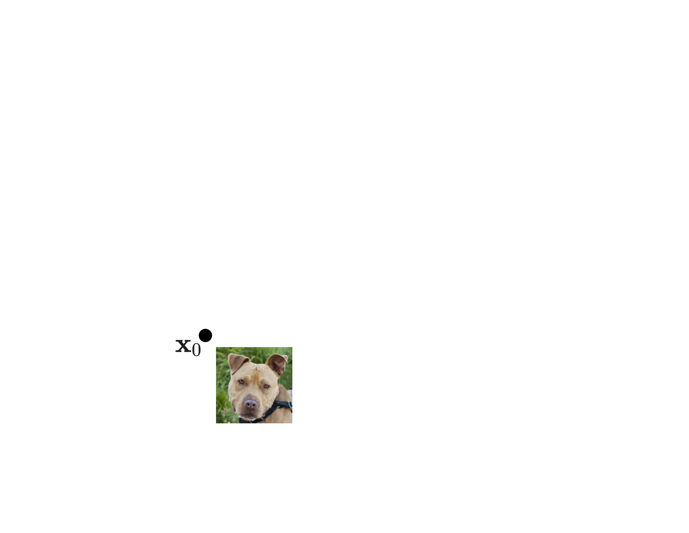
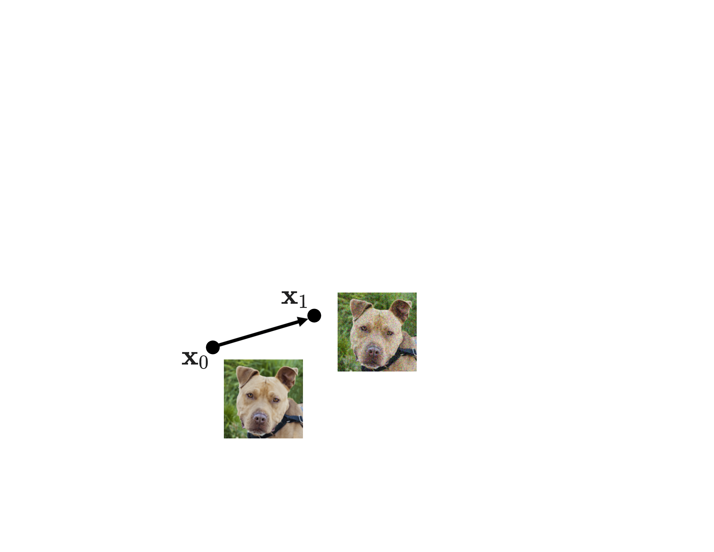
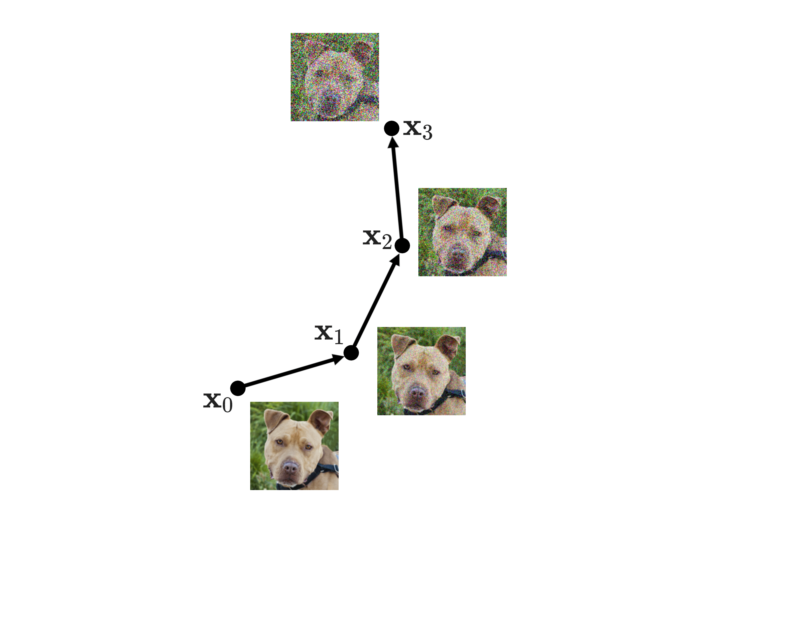
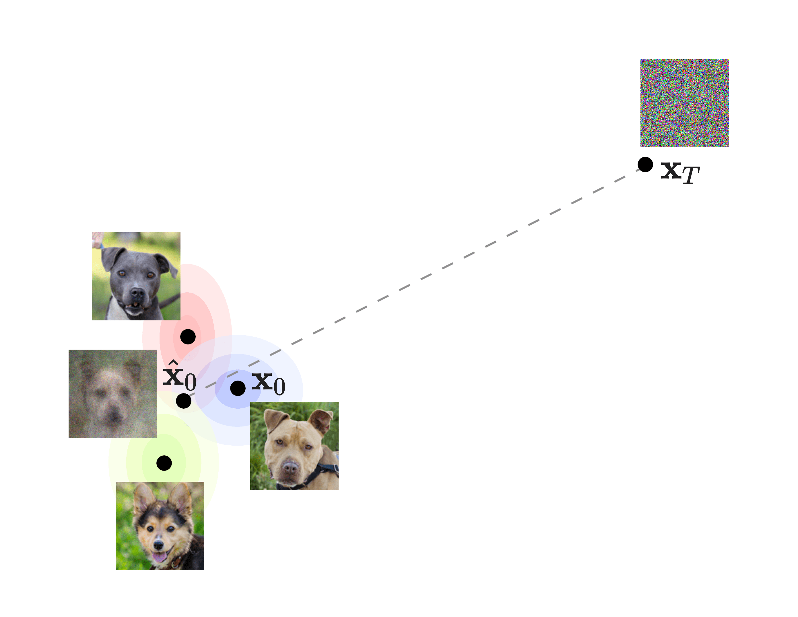
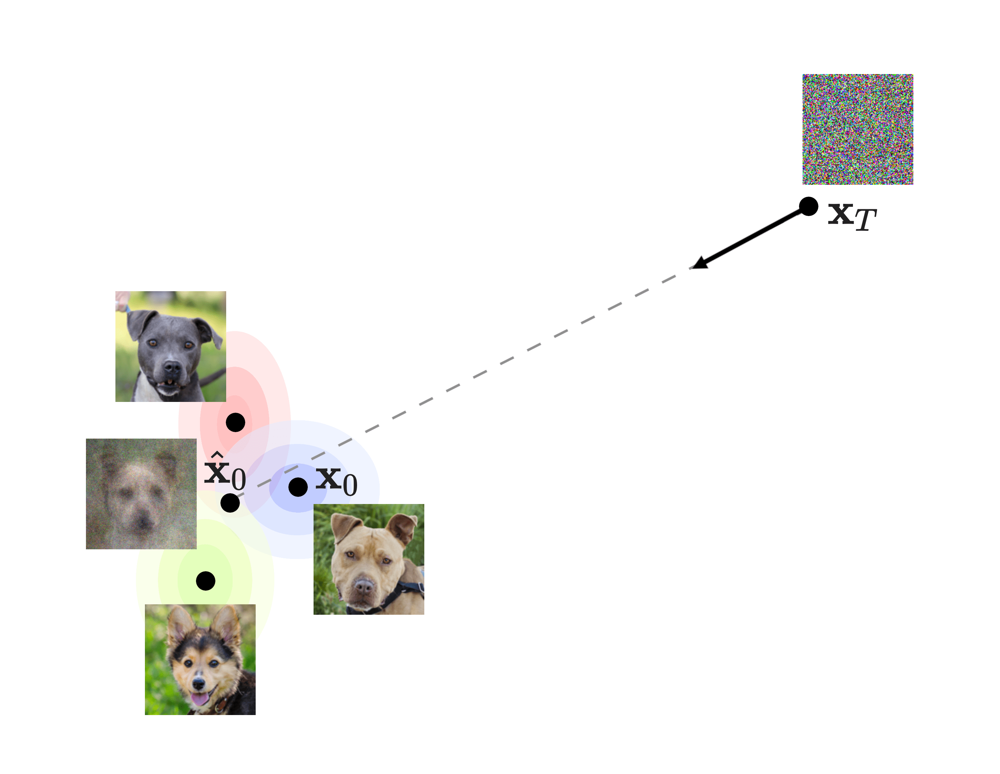
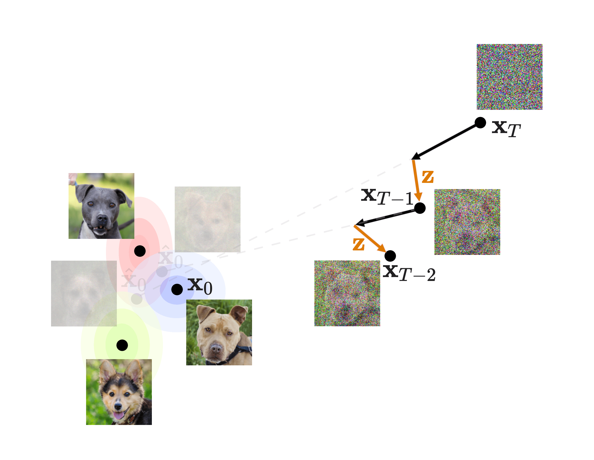

@article{sanchez2024diffappendices,
title = "Appendices for lectures on diffusion models",
author = "Sanchez, Laura and Soto, Julio A.",
year = "2024",
month = "Nov",
url = "https://julioasotodv.github.io/ie-c4-466671-diffusion-models/Appendices%20for%20lectures%20on%20diffusion%20models.html"
}Appendices for lectures on diffusion models
This document accompanies the slides available here
A. The Nice™ property
This property allows us to jump to any \(\mathbf{x}_t\) (noisy image at timestep \(t\)) directly from \(\mathbf{x}_0\) (original image) without having to compute any intermediate steps. To understand where it comes from, let’s recover first the forward process equation:
\[q(\mathbf{x}_t \mid \mathbf{x}_{t-1}) \coloneqq \mathcal{N}(\mathbf{x}_t; \sqrt{1 - \beta_t} \mathbf{x}_{t-1}, \beta_t \mathbf{I}) \tag{1}\label{1}\]
As seen in slide 14 and Equation \((2)\) of the DDPM paper. \(\mathbf{I}\) is the identity matrix, which basically indicates that the multivariate Normal distribution is isotropic (only the main diagonal has nonzero values, as \(\mathbf{I}\) is multiplied by \(\beta_t\), yielding the covariance matrix of the Normal). In a nutshell, an isotropic Normal distribution is the one in which all the covariances between its dimensions are 0. Therefore, all its dimensions are independent from each other.
Now, let’s define two additional variables that will become handy. We will define:
\[\alpha_t \coloneqq 1 - \beta_t \tag{2} \label{2}\]
And
\[\bar\alpha_t \coloneqq \prod_{s=1}^t{\alpha_s} \tag{3} \label{3}\]
\(\alpha_t\) is self-explanatory. As for \(\bar\alpha_t\), it’s just the product of all \(\alpha\)s from the first one (\(\alpha_1\)) up to \(\alpha_t\). For instance: \(\bar\alpha_4 = \alpha_1 \cdot \alpha_2 \cdot \alpha_3 \cdot \alpha_4\)
With that in mind, now let’s express \(\mathbf{x}_t\) as a transformation instead of as the Normal probability distribution \(q(\mathbf{x}_t \mid \mathbf{x}_{t-1})\). To do so, we can take advantage of the reparametrization trick for the Normal distribution. In a nutshell, the reparametrization trick allows us to express a random variable \(z\) from any Normal distribution (with any mean \(\mu\) and variance \(\sigma^2\)) in terms of the Standard Normal \(\mathcal{N}(0, 1)\), which we will call \(\boldsymbol{\epsilon}\) for simplicity, as follows:
\[z \sim \mathcal{N}(\mu, \sigma^2) \longrightarrow z = \mu + \sigma \cdot \boldsymbol{\epsilon},\qquad \boldsymbol{\epsilon} \sim \mathcal{N}(0, 1) \tag{4}\label{4}\]
With the reparametrization trick from \(\eqref{4}\) and the definition of \(\alpha_t\) in \(\eqref{2}\) we can now express \(\mathbf{x}_t\) following \(\eqref{1}\) as:
\[\begin{align}
\mathbf{x}_t & = \sqrt{1 - \beta_t} \mathbf{x}_{t-1} + \sqrt{\beta} \boldsymbol{\epsilon} \\
\, \\
& = \sqrt{\alpha_t} \mathbf{x}_{t-1} + \sqrt{1 - \alpha_t} \boldsymbol{\epsilon}
\end{align}\]
As you may imagine, \(\mathbf{x}_{t-1}\) can also be developed using the exact same formula, to be written in terms of \(\mathbf{x}_{t-2}\). Therefore, we can say:
\[\begin{align}
\mathbf{x}_{t} & = \sqrt{\alpha_t}(\sqrt{\alpha_{t-1}}\mathbf{x}_{t-2} + \sqrt{1- \alpha_{t-1}}\boldsymbol{\epsilon}) + \sqrt{1 - \alpha_t}\boldsymbol{\epsilon} \\
& \, \\
& \text{multiplying:} \\
& = \sqrt{\alpha_t}\sqrt{\alpha_{t-1}}\mathbf{x}_{t-2} + \sqrt{\alpha_t}\sqrt{1 - \alpha_{t-1}}\boldsymbol{\epsilon} + \sqrt{1 - \alpha_t}\boldsymbol{\epsilon} \\
& \, \\
& \text{grouping square roots (remember that the product} \\
& \text{of square roots is the square root of the product):} \\
& = \sqrt{\alpha_t \alpha_{t-1}}\mathbf{x}_{t-2} + \sqrt{\alpha_t (1 - \alpha_{t-1})} \boldsymbol{\epsilon} + \sqrt{1 - \alpha_t}\boldsymbol{\epsilon} \tag{5}\label{5}
\end{align}\]
To simplify it, we can take advantage of a cool property of Normal distributions, where the sum \(c\) of two normally distributed random variables \(a\) and \(b\) can be expressed as another Normal distribution, as follows:
\[\displaylines{
a \sim \mathcal{N}(\mu_a, \sigma^2_a) \\
b \sim \mathcal{N}(\mu_b, \sigma^2_b) \\
c = a + b \\ \text{with}\\
c \sim \mathcal{N}(\mu_a + \mu_b, \, \sigma^2_a + \sigma^2_b)
}\]
Think for a second: if we apply the reparametrization trick \(\eqref{4}\) in reverse we could say for instance that \(\sqrt{1 - \alpha_t}\epsilon \sim \mathcal{N}(0, (1 - \alpha_t)\mathbf{I})\) (keep in mind what is standard deviation and what is variance!). With that in mind, we can now recover \(\eqref{5}\), apply the addition of two Normals and keep on developing it:
\[\begin{align}
\mathbf{x}_{t} & = \sqrt{\alpha_t \alpha_{t-1}}\mathbf{x}_{t-2} + \sqrt{\alpha_t (1 - \alpha_{t-1})} \epsilon + \sqrt{1 - \alpha_t}\boldsymbol{\epsilon} \\
& \, \\
& \text{addition of Normal random variables:} \\
& = \sqrt{\alpha_t \alpha_{t-1}}\mathbf{x}_{t-2} + \sqrt{\alpha_t(1 - \alpha_{t-1}) + (1 - \alpha_t)}\boldsymbol{\epsilon} \\
& \, \\
& = \sqrt{\alpha_t \alpha_{t-1}}\mathbf{x}_{t-2} + \sqrt{\alpha_t - \alpha_t \alpha_{t-1} + 1 - \alpha_t}\boldsymbol{\epsilon} \\
& \, \\
& = \sqrt{\alpha_t \alpha_{t-1}}\mathbf{x}_{t-2} + \sqrt{1 - \alpha_t \alpha_{t-1}}\boldsymbol{\epsilon} \\
\end{align}\]
We can keep on recursively developing \(\mathbf{x}_{t-2}\) in terms of \(\mathbf{x}_{t-3}\) applying the exact same logic…
\[\begin{align}
\mathbf{x}_{t} & = \sqrt{\alpha_t \alpha_{t-1}}\mathbf{x}_{t-2} + \sqrt{1 - \alpha_t \alpha_{t-1}}\boldsymbol{\epsilon} \\
& \, \\
& = \sqrt{\alpha_t \alpha_{t-1} \alpha_{t-2}}\mathbf{x}_{t-3} + \sqrt{1 - \alpha_t \alpha_{t-1} \alpha_{t-2}}\boldsymbol{\epsilon}
\end{align}\]
… And we could keep on, until we write everything in terms of only \(\mathbf{x}_0\). Doing so, we would get:
\[\mathbf{x}_t = \sqrt{\prod_{s=1}^t{\alpha_s}} \mathbf{x}_{0} + \sqrt{1 - \prod_{s=1}^t{\alpha_s}}\boldsymbol{\epsilon}\]
And now we can apply the definition of \(\bar\alpha_t\) in \(\eqref{3}\) to rewrite it as:
\[\mathbf{x}_t = \sqrt{\bar\alpha_t} \mathbf{x}_{0} + \sqrt{1 - \bar\alpha_t}\boldsymbol{\epsilon}\]
Finally, applying the reparametrization trick in reverse again we can state that:
\[q(\mathbf{x}_t \mid \mathbf{x}_{0}) = \mathcal{N}(\mathbf{x}_t; \sqrt{\bar\alpha_t} \mathbf{x}_0, (1- \bar\alpha_t) \mathbf{I}) \tag{6} \label{6}\]
As seen in the Nice™ property slide and in Equation \((4)\) of the DDPM paper.
B. Diffusion loss function: ELBO derivation
The DDPM model looks very similar to a Variational Autoencoder if you think of it, except for three little things:
We can think of a DDPM as a VAE where the forward diffusion process is the VAE encoder; and the reverse diffusion process is the VAE decoder. However, the forward diffusion process in a DDPM does not need to be learned by a neural network: we just set it up as a sequence of noise additions (as we have seen)
A VAE computes the latent space in a single step, whereas in DDPMs we perform many steps to reach there. However, there is a variant of VAEs that also involves many steps in an almost identical fashion to a DDPM, called MHVAEs (Markovian Hierarchical Variational Autoencoders). In fact, both forward and reverse processes in DDPM are Markovian, meaning that they follow the Markov property: in which the state of the noisy image at a specific timestep \(t\) only depends on the state of the image in the immediately previous step (\(t-1\) in the forward process and \(t+1\) in the reverse process, respectively)
We can think of the fully noised image \(\mathbf{x}_T\) in similar terms to a VAE’s latent space \(Z\). However, the latent space in VAEs has smaller dimensions than the original image, whereas in DDPMs the dimensions are the same as in the original image (same image height, width and channels)
Other than that, both models are very similar. Therefore, we can try to express the loss function of a DDPM by building on the VAE one.
Note: There are more ways to get to the same loss function that we will end up with. By using different principles or slightly different definitions, we can still reach the same final equation. I say this because you may find different derivations online or in other books/papers. However, the final loss expression should be the same (or at least equivalent).
B.1. VAE loss
At the end of the day, both in VAEs and in DDPMs we want our final generated image to be as accurate as possible. The most widely used concept to measure how well the generated output matches the training data is the likelihood.
Given a model with learnable weights/parameters \(\theta\), we can express the likelihood of the generated data \(\mathbf{x}\) as \(p(\mathbf{x} \mid \theta)\), which can be read as how likely it is that the data generated (by our model with parameters \(\theta\)) comes from the training data. If this quantity is high, it means that our generated images look very similar to the ground truth images in our training dataset, which is great—because it means that the generated images are realistic!
Therefore, our goal with these generative models will be (at least in part) to maximize the likelihood \(p(\mathbf{x} \mid \theta)\) or, rather, its logarithm since it is more numerically stable: \(\log p(\mathbf{x} \mid \theta)\). However, this term is usually written as \(\log p_\theta(\mathbf{x})\) to make it shorter. But keep in mind that both are exactly the same: \(p_\theta(\mathbf{x}) = p(\mathbf{x} \mid \theta)\).
Nevertheless, we came here to generate new images—not to only learn how to perfectly rebuild an already existing one. Therefore, we will add some additional terms to the loss function to encourage generative properties (instead of the pure reconstruction quality measured by the likelihood).
That’s why the VAE loss function includes an additional term: the Kullback-Leibler (KL) Divergence between the learned latent space \(Z\) and a Standard Normal distribution \(\mathcal{N}(0, 1)\) (which acts as a prior if we think in Bayes’ theorem terms). This allows the model to be a generative one: since the learned latent space \(Z\) will closely resemble a Normal distribution, we can sample from that distribution to generate new, varied images! That’s why the VAE has those two terms in its loss function: the likelihood (also usually known as the reconstruction term) and the KL divergence (also usually known as the prior matching term).
The composition of these two terms gives us the VAE loss function to minimize, which is the maximization of a quantity usually known as ELBO (Evidence Lower BOund)—even though it is also known as VLB (Variational Lower Bound). We won’t discuss here why it is called this way or why it is usually expressed as an inequality \(\log p_\theta(\mathbf{x}) >= \text{ELBO}\) (to learn more about this we would need to explain how variational inference works in bayesian statistics, and trust me: it ain’t easy and we would easily deviate from the topic). After some development, we end up with the following definition for the VAE’s ELBO:
\[\text{ELBO}_\text{VAE} = \mathbb{E}_{\mathbf{z} \sim q_\phi(\mathbf{z}\mid \mathbf{x})}[\log p_\theta(\mathbf{x}\mid \mathbf{z})] - \mathcal{D}_{\text{KL}}(q_\phi(\mathbf{z} \mid \mathbf{x}) \mid \mid p(\mathbf{z}))\]
There is a lot to digest here. First and foremost, \(\mathbf{z}\) is the random variable from the latent space \(Z\), and we will call \(\phi\) to the autoencoder’s parameters/weights in the encoder, while we will leave \(\theta\) to represent the parameters/weights for the decoder. Therefore:
\(\log p_\theta(\mathbf{x}\mid \mathbf{z})\) is the (log) likelihood of the VAE’s decoder output (that generates images \(\mathbf{x}\) given a sampled instance \(\mathbf{z}\) from the latent space \(Z\)), which measures how well the decoder is able to create images that look as if they came from the original data. Hence, this is the reconstruction term (don’t worry for now about the expectation \(\mathbb{E}\); it just means averaging over all possible values of \(\mathbf{z}\))
\(\mathcal{D}_{\text{KL}}(q_\phi(\mathbf{z} \mid \mathbf{x}) \mid \mid p(\mathbf{z}))\) is the Kullback-Leibler Divergence between the encoder’s output (the data in the latent space \(\mathbf{z}\) given a training data image \(\mathbf{x}\)) and \(p(\mathbf{z})\), which is the prior for the latent space \(Z\). We set this prior to a Standard Normal \(\mathcal{N}(0, 1)\) in the VAE, as stated earlier. This divergence is always \(\geq0\) (all KL divergences always are), and the lower the better (because that it would mean that the latent space \(Z\) resembles a Standard Normal, from which we can easily sample). Therefore, this is the prior matching term
So, to train a VAE we try to maximize the ELBO. In order to do so, we will maximize the reconstruction term and minimize the prior matching term at the same time.
That is the “final” expression for the VAE ELBO. However, to understand better DDPM’s ELBO it would be useful to use a more generic expression for VAE’s ELBO. To do so, we can work our way back. To do so, we can recall a general definition of KL divergence as:
\[\mathcal{D}_{\text{KL}}(q\mid \mid p) = \mathbb{E}_x \left[ \log \frac{q(x)}{p(x)} \right] \tag{7} \label{7}\]
Which can be used to “undo” the KL divergence in VAE loss as:
\[\begin{align}
\text{ELBO}_\text{VAE} & = \mathbb{E}_{\mathbf{z} \sim q_\phi(\mathbf{z}\mid \mathbf{x})}[\log p_\theta(\mathbf{x}\mid \mathbf{z})] - \mathcal{D}_{\text{KL}}(q_\phi(\mathbf{z} \mid \mathbf{x}) \mid \mid p(\mathbf{z})) \\
\, \\
&= \mathbb{E}_{\mathbf{z} \sim q_\phi(\mathbf{z}\mid \mathbf{x})}[\log p_\theta(\mathbf{x}\mid \mathbf{z})] - \mathbb{E}_{\mathbf{z} \sim q_\phi(\mathbf{z}\mid \mathbf{x})} \left[ \log \frac{q_\phi (\mathbf{z} \mid \mathbf{x})}{p(\mathbf{z})} \right] \\
\, \\
& \text{given the property } \log \frac{a}{b} = - \log \frac{b}{a} \text{:} \\
&= \mathbb{E}_{\mathbf{z} \sim q_\phi(\mathbf{z}\mid \mathbf{x})}[\log p_\theta(\mathbf{x}\mid \mathbf{z})] + \mathbb{E}_{\mathbf{z} \sim q_\phi(\mathbf{z}\mid \mathbf{x})} \left[ \log \frac{p(\mathbf{z})}{q_\phi (\mathbf{z} \mid \mathbf{x})} \right] \\
\, \\
& \text{applying } \log a + \log b = \log(a \cdot b) \text{:} \\
&= \mathbb{E}_{\mathbf{z} \sim q_\phi(\mathbf{z}\mid \mathbf{x})} \left[ \log \frac{p_\theta(\mathbf{x}\mid \mathbf{z}) \cdot p(\mathbf{z})}{q_\phi (\mathbf{z} \mid \mathbf{x})} \right] \\
\, \\
& \text{with the product rule of joint probabilities } p(u, v) = p(u \mid v) \cdot p(v) \text{:} \\
&= \mathbb{E}_{\mathbf{z} \sim q_\phi(\mathbf{z}\mid \mathbf{x})} \left[ \log \frac{p_\theta(\mathbf{x}, \mathbf{z})}{q_\phi (\mathbf{z} \mid \mathbf{x})} \right] \tag{8} \label{8}\\
\end{align}\]
This is the expression we will start from in order to compute the ELBO for the DDPM model.
B.2. DDPM loss
To start working on the DDPM loss, we just have to adapt the ELBO we have for the VAE to suit the model differences between VAEs and DDPMs, as we discussed earlier. Therefore, we will introduce the following changes:
\(\mathbf{z}\) doesn’t really exist as a latent space in DDPMs. Or rather, we could say that in DDPMs we have many latent spaces—the image with each of the different noise levels!: \(\mathbf{x}_0, \mathbf{x}_1,\ldots,\mathbf{x}_T\). Therefore \(p_\theta(\mathbf{x}, \mathbf{z})\) in \(\eqref{8}\), the joint distribution of \(\mathbf{x}\) and \(\mathbf{z}\), will become \(p_\theta(\mathbf{x}_{0 : T})\) (the joint distribution over all different noise states for an image)
\(q_\phi (\mathbf{z} \mid \mathbf{x})\) was the encoder output in the VAE, but in DDPM it is the forward diffusion process. As we stated earlier, the forward process does not have any learnable parameters \(\phi\) since it is not a learned process; therefore, we can fully drop \(\phi\) from the notation. Furthermore, compared to a VAE now the goal is to produce noisy versions of the image \(\mathbf{x}_1, \mathbf{x}_2,\ldots,\mathbf{x}_T\) starting from \(\mathbf{x}_0\). Hence, \(q_\phi (\mathbf{z} \mid \mathbf{x})\) will now become \(q(\mathbf{x}_{1:T} \mid \mathbf{x}_0)\) for our DDPM.
With this in mind, the ELBO for the DDPM model becomes:
\[\text{ELBO}_\text{DDPM} = \mathbb{E}_{q(\mathbf{x}_{1:T} \mid \mathbf{x}_0)} \left[ \log \frac{p_\theta(\mathbf{x}_{0 : T})}{q(\mathbf{x}_{1:T} \mid \mathbf{x}_0)} \right] \tag{9} \label{9}\]
As seen in Equation \((3)\) of the DDPM paper. Now, to make this quantity manageable, let’s perform some derivations. We showed in slide 17 that the reverse process can be expressed as a chain of denoising steps from a fully noisy image \(p(\mathbf{x}_T)\)—which is just data from a Standard Normal \(\mathcal{N}(0, \mathbf{I})\)—all the way back to the original image \(\mathbf{x}_0\). Using the chain rule of probability and the Markov property, this can be expressed as:
\[p_{\theta}(\mathbf{x}_{0:T}) \coloneqq p(\mathbf{x}_T) \prod_{t=1}^T{p_{\theta}(\mathbf{x}_{t-1} \mid \mathbf{x}_{t})} \tag{10} \label{10}\]
As seen in slide 17 and in Equation \((1)\) of the DDPM paper. We can then develop the numerator in \(\eqref{9}\) according to that logic: \[\text{ELBO}_\text{DDPM} = \mathbb{E}_{q(\mathbf{x}_{1:T} \mid \mathbf{x}_0)} \left[ \log \frac{p(\mathbf{x}_T) \prod_{t=1}^T{p_{\theta}(\mathbf{x}_{t-1} \mid \mathbf{x}_{t})}}{q(\mathbf{x}_{1:T} \mid \mathbf{x}_0)} \right] \tag{11} \label{11}\]
Similarly, for the forward process we have a similar chain, in this case in the form of: \[q(\mathbf{x}_{1:T} \mid \mathbf{x}_0) \coloneqq \prod^T_{t=1}{q(\mathbf{x}_{t} \mid \mathbf{x}_{t-1})} \tag{12} \label{12}\]
As seen in Equation \((2)\) of the DDPM paper. This can be substituted in the denominator of \(\eqref{11}\) to get:
\[\text{ELBO}_\text{DDPM} = \mathbb{E}_{q(\mathbf{x}_{1:T} \mid \mathbf{x}_0)} \left[ \log \frac{p(\mathbf{x}_T) \prod_{t=1}^T{p_{\theta}(\mathbf{x}_{t-1} \mid \mathbf{x}_{t})}}{\prod^T_{t=1}{q(\mathbf{x}_{t} \mid \mathbf{x}_{t-1})}} \right] \tag{13} \label{13}\]
We will now slightly further develop the products, since it will become handy later. We will decouple the first term from the product in \(\eqref{10}\):
\[\prod_{t=1}^T{p_{\theta}(\mathbf{x}_{t-1} \mid \mathbf{x}_{t})} = p_\theta(\mathbf{x}_0 \mid \mathbf{x}_1) \prod_{t=2}^T {p_{\theta}(\mathbf{x}_{t-1} \mid \mathbf{x}_{t})}\]
And the same for \(\eqref{12}\):
\[\prod^T_{t=1}{q(\mathbf{x}_{t} \mid \mathbf{x}_{t-1})} = q(\mathbf{x}_1 \mid \mathbf{x}_0) \prod^T_{t=2}{q(\mathbf{x}_{t} \mid \mathbf{x}_{t-1})}\]
Including these two back in \(\eqref{13}\):
\[\text{ELBO}_\text{DDPM} = \mathbb{E}_{q(\mathbf{x}_{1:T} \mid \mathbf{x}_0)} \left[ \log \frac{p(\mathbf{x}_T) p_\theta(\mathbf{x}_0 \mid \mathbf{x}_1) \prod_{t=2}^T{p_{\theta}(\mathbf{x}_{t-1} \mid \mathbf{x}_{t})}}{q(\mathbf{x}_1 \mid \mathbf{x}_0) \prod^T_{t=2}{q(\mathbf{x}_{t} \mid \mathbf{x}_{t-1})}} \right] \tag{14} \label{14}\]
That \(q(\mathbf{x}_{t} \mid \mathbf{x}_{t-1})\) in the product in the denominator seems inoffensive. But trust me: after some more derivations, we will end up with a term in the ELBO in the form of \(\mathbb{E}_{q(\mathbf{x}_{t-1}, \mathbf{x}_{t+1} \mid \mathbf{x}_0)} \left[ \text{something} \right]\), which is an expectation over two random variables \(\mathbf{x}_{t-1}\) and \(\mathbf{x}_{t+1}\). This can be approximated through Monte Carlo estimates, but it will yield high variance estimates and will be suboptimal.
Instead, we will be able to get rid of that ugly expectation by using a simple idea: we can instead re-write \(q(\mathbf{x}_{t} \mid \mathbf{x}_{t-1})\) as being conditioned on \(\mathbf{x}_0\) (the original image), yielding \(q(\mathbf{x}_{t} \mid \mathbf{x}_{t-1}, \mathbf{x}_0)\). Due to the Markov property these two are exactly the same, so \(q(\mathbf{x}_{t} \mid \mathbf{x}_{t-1}, \mathbf{x}_0) = q(\mathbf{x}_{t} \mid \mathbf{x}_{t-1})\). However, we will use the one conditioned on \(\mathbf{x}_0\), since in a moment we will expand that expression using Bayes’ theorem, which will allow us to avoid the expectation over two variables.
With that in mind, we will substitute that term in the denominator of \(\eqref{14}\):
\[\text{ELBO}_\text{DDPM} = \mathbb{E}_{q(\mathbf{x}_{1:T} \mid \mathbf{x}_0)} \left[ \log \frac{p(\mathbf{x}_T) p_\theta(\mathbf{x}_0 \mid \mathbf{x}_1) \prod_{t=2}^T{p_{\theta}(\mathbf{x}_{t-1} \mid \mathbf{x}_{t})}}{q(\mathbf{x}_1 \mid \mathbf{x}_0) \prod^T_{t=2}{q(\mathbf{x}_{t} \mid \mathbf{x}_{t-1}, \mathbf{x}_0)}} \right]\]
Now let’s take advantage of \(\log (a \cdot b) = \log a + \log b\) and split the expression into two summands, isolating the products:
\[\text{ELBO}_\text{DDPM} = \mathbb{E}_{q(\mathbf{x}_{1:T} \mid \mathbf{x}_0)} \left[ \log \frac{p(\mathbf{x}_T) p_\theta(\mathbf{x}_0 \mid \mathbf{x}_1)}{q(\mathbf{x}_1 \mid \mathbf{x}_0)} + \log \prod^T_{t=2}{\frac{p_{\theta}(\mathbf{x}_{t-1} \mid \mathbf{x}_{t})}{q(\mathbf{x}_{t} \mid \mathbf{x}_{t-1}, \mathbf{x}_0)}} \right]\]
We will now apply Bayes’ theorem to the denominator in the product, as we anticipated before:
\[\begin{align}
\text{ELBO}_\text{DDPM} & = \mathbb{E}_{q(\mathbf{x}_{1:T} \mid \mathbf{x}_0)} \left[ \log \frac{p(\mathbf{x}_T) p_\theta(\mathbf{x}_0 \mid \mathbf{x}_1)}{q(\mathbf{x}_1 \mid \mathbf{x}_0)} + \log \prod^T_{t=2}{\frac{p_{\theta}(\mathbf{x}_{t-1} \mid \mathbf{x}_{t})}{\frac{q(\mathbf{x}_{t-1} \mid \mathbf{x}_t, \mathbf{x}_0) q(\mathbf{x}_t \mid \mathbf{x_0})}{q(\mathbf{x}_{t-1} \mid \mathbf{x_0})}}} \right] \\
\, \\
& \text{rearranging the denominator in the last term:} \\
& = \mathbb{E}_{q(\mathbf{x}_{1:T} \mid \mathbf{x}_0)} \left[ \log \frac{p(\mathbf{x}_T) p_\theta(\mathbf{x}_0 \mid \mathbf{x}_1)}{q(\mathbf{x}_1 \mid \mathbf{x}_0)} + \log \left( \prod_{t=2}^{T}{\frac{p_\theta(\mathbf{x}_{t-1} \mid \mathbf{x}_t)}{q(\mathbf{x}_{t-1} \mid \mathbf{x}_t, \mathbf{x}_0)}} \times \prod_{t=2}^{T}{\frac{q(\mathbf{x}_{t-1} \mid \mathbf{x}_0)}{q(\mathbf{x}_t \mid \mathbf{x}_0)}} \right) \right] \tag{15} \label{15}
\end{align}\]
And we can simplify the last product in \(\eqref{15}\). To see how, let’s develop it for instance assuming that \(T = 6\):
\[\begin{align}
\prod_{t=2}^{6}{\frac{q(\mathbf{x}_{t-1} \mid \mathbf{x}_0)}{q(\mathbf{x}_t \mid \mathbf{x}_0)}} &= \frac{q(\mathbf{x}_1 \mid \mathbf{x}_0)}{q(\mathbf{x}_2 \mid \mathbf{x}_0)} \times \frac{q(\mathbf{x}_2 \mid \mathbf{x}_0)}{q(\mathbf{x}_3 \mid \mathbf{x}_0)} \times \frac{q(\mathbf{x}_3 \mid \mathbf{x}_0)}{q(\mathbf{x}_4 \mid \mathbf{x}_0)} \times \frac{q(\mathbf{x}_4 \mid \mathbf{x}_0)}{q(\mathbf{x}_5 \mid \mathbf{x}_0)} \times \frac{q(\mathbf{x}_5 \mid \mathbf{x}_0)}{q(\mathbf{x}_6 \mid \mathbf{x}_0)} \\
\, \\
& \text{we can cancel out most terms, as are present in both numerator and denominator:} \\
& = \frac{q(\mathbf{x}_1 \mid \mathbf{x}_0)}{\cancel{q(\mathbf{x}_2 \mid \mathbf{x}_0)}} \times \frac{\cancel{q(\mathbf{x}_2 \mid \mathbf{x}_0)}}{\cancel{q(\mathbf{x}_3 \mid \mathbf{x}_0)}} \times \frac{\cancel{q(\mathbf{x}_3 \mid \mathbf{x}_0)}}{\cancel{q(\mathbf{x}_4 \mid \mathbf{x}_0)}} \times \frac{\cancel{q(\mathbf{x}_4 \mid \mathbf{x}_0)}}{\cancel{q(\mathbf{x}_5 \mid \mathbf{x}_0)}} \times \frac{\cancel{q(\mathbf{x}_5 \mid \mathbf{x}_0)}}{q(\mathbf{x}_6 \mid \mathbf{x}_0)} \\
\, \\
& = \frac{q(\mathbf{x}_1 \mid \mathbf{x}_0)}{q(\mathbf{x}_6 \mid \mathbf{x}_0)}
\end{align}\]
You can see the clear pattern, right? Knowing this, \(\eqref{15}\) becomes:
\[\begin{align}
\text{ELBO}_\text{DDPM} &= \mathbb{E}_{q(\mathbf{x}_{1:T} \mid \mathbf{x}_0)} \left[ \log \frac{p(\mathbf{x}_T) p_\theta(\mathbf{x}_0 \mid \mathbf{x}_1)}{q(\mathbf{x}_1 \mid \mathbf{x}_0)} + \log \left( \prod_{t=2}^{T}{\frac{p_\theta(\mathbf{x}_{t-1} \mid \mathbf{x}_t)}{q(\mathbf{x}_{t-1} \mid \mathbf{x}_t, \mathbf{x}_0)}} \times \frac{q(\mathbf{x}_1 \mid \mathbf{x}_0)}{q(\mathbf{x}_T \mid \mathbf{x}_0)} \right) \right] \\
\, \\
& \text{applying } \log(a \cdot b) = \log a + \log b \text{:} \\
&= \mathbb{E}_{q(\mathbf{x}_{1:T} \mid \mathbf{x}_0)} \left[ \log \frac{p(\mathbf{x}_T) p_\theta(\mathbf{x}_0 \mid \mathbf{x}_1)}{q(\mathbf{x}_1 \mid \mathbf{x}_0)} + \log \frac{q(\mathbf{x}_1 \mid \mathbf{x}_0)}{q(\mathbf{x}_T \mid \mathbf{x}_0)} + \log \prod_{t=2}^{T}{\frac{p_\theta(\mathbf{x}_{t-1} \mid \mathbf{x}_t)}{q(\mathbf{x}_{t-1} \mid \mathbf{x}_t, \mathbf{x}_0)}} \right] \\
\, \\
& \text{now applying } \log a + \log b = \log(a \cdot b) \text{:} \\
&= \mathbb{E}_{q(\mathbf{x}_{1:T} \mid \mathbf{x}_0)} \left[ \log \left( \frac{p(\mathbf{x}_T) p_\theta(\mathbf{x}_0 \mid \mathbf{x}_1)}{q(\mathbf{x}_1 \mid \mathbf{x}_0)} \times \frac{q(\mathbf{x}_1 \mid \mathbf{x}_0)}{q(\mathbf{x}_T \mid \mathbf{x}_0)} \right) + \log \prod_{t=2}^{T}{\frac{p_\theta(\mathbf{x}_{t-1} \mid \mathbf{x}_t)}{q(\mathbf{x}_{t-1} \mid \mathbf{x}_t, \mathbf{x}_0)}} \right] \\
\, \\
& \text{cancelling out:} \\
&= \mathbb{E}_{q(\mathbf{x}_{1:T} \mid \mathbf{x}_0)} \left[ \log \left( \frac{p(\mathbf{x}_T) p_\theta(\mathbf{x}_0 \mid \mathbf{x}_1)}{\cancel{q(\mathbf{x}_1 \mid \mathbf{x}_0)}} \times \frac{\cancel{q(\mathbf{x}_1 \mid \mathbf{x}_0)}}{q(\mathbf{x}_T \mid \mathbf{x}_0)} \right) + \log \prod_{t=2}^{T}{\frac{p_\theta(\mathbf{x}_{t-1} \mid \mathbf{x}_t)}{q(\mathbf{x}_{t-1} \mid \mathbf{x}_t, \mathbf{x}_0)}} \right] \\
\, \\
&= \mathbb{E}_{q(\mathbf{x}_{1:T} \mid \mathbf{x}_0)} \left[ \log \frac{p(\mathbf{x}_T) p_\theta(\mathbf{x}_0 \mid \mathbf{x}_1)}{q(\mathbf{x}_T \mid \mathbf{x}_0)} + \log \prod_{t=2}^{T}{\frac{p_\theta(\mathbf{x}_{t-1} \mid \mathbf{x}_t)}{q(\mathbf{x}_{t-1} \mid \mathbf{x}_t, \mathbf{x}_0)}} \right] \\
\, \\
& \text{splitting the first log (again: } \log(a \cdot b) = \log a + \log b \text{):} \\
&= \mathbb{E}_{q(\mathbf{x}_{1:T} \mid \mathbf{x}_0)} \left[ \log p_\theta(\mathbf{x}_0 \mid \mathbf{x}_1) + \log \frac{p(\mathbf{x}_T)}{q(\mathbf{x}_T \mid \mathbf{x}_0)} + \log \prod_{t=2}^{T}{\frac{p_\theta(\mathbf{x}_{t-1} \mid \mathbf{x}_t)}{q(\mathbf{x}_{t-1} \mid \mathbf{x}_t, \mathbf{x}_0)}} \right] \\
\, \\
& \text{applying yet again} \log(a \cdot b) = \log a + \log b \text{, but now to the product in the third term:} \\
&= \mathbb{E}_{q(\mathbf{x}_{1:T} \mid \mathbf{x}_0)} \left[ \log p_\theta(\mathbf{x}_0 \mid \mathbf{x}_1) + \log \frac{p(\mathbf{x}_T)}{q(\mathbf{x}_T \mid \mathbf{x}_0)} + \sum_{t=2}^{T}{\log \frac{p_\theta(\mathbf{x}_{t-1} \mid \mathbf{x}_t)}{q(\mathbf{x}_{t-1} \mid \mathbf{x}_t, \mathbf{x}_0)}} \right] \\
\, \\
& \text{due to the linearity of expectation property: } \mathbb{E}[X + Y] = \mathbb{E}[X] + \mathbb{E}[Y] \text{:} \\
&= \mathbb{E}_{q(\mathbf{x}_{1:T} \mid \mathbf{x}_0)} \left[ \log p_\theta(\mathbf{x}_0 \mid \mathbf{x}_1) \right] + \mathbb{E}_{q(\mathbf{x}_{1:T} \mid \mathbf{x}_0)} \left[ \log \frac{p(\mathbf{x}_T)}{q(\mathbf{x}_T \mid \mathbf{x}_0)} \right] + \sum_{t=2}^{T}{ \mathbb{E}_{q(\mathbf{x}_{1:T} \mid \mathbf{x}_0)} \left[ \log \frac{p_\theta(\mathbf{x}_{t-1} \mid \mathbf{x}_t)}{q(\mathbf{x}_{t-1} \mid \mathbf{x}_t, \mathbf{x}_0)} \right]} \tag{16} \label{16}\\
\end{align}\]
With this, we end up with three expectation terms. All three are expectations over \(q(\mathbf{x}_{1:T}\mid \mathbf{x}_0)\). However, it doesn’t make sense to try to compute the expectation (which is nothing but a weighted average) over terms that do not appear inside the brackets of that specific expectation. For instance, within the brackets of the first expectation we only have \(\mathbf{x}_0\) and \(\mathbf{x}_1\), so any other \(\mathbf{x}_\ldots\) which is present in \(1:T\) can be dropped from the subscript.
Therefore, we can write \(\eqref{16}\) as:
\[\text{ELBO}_\text{DDPM} = \mathbb{E}_{q(\mathbf{x}_{1} \mid \mathbf{x}_0)} \left[ \log p_\theta(\mathbf{x}_0 \mid \mathbf{x}_1) \right] + \mathbb{E}_{q(\mathbf{x}_{T} \mid \mathbf{x}_0)} \left[ \log \frac{p(\mathbf{x}_T)}{q(\mathbf{x}_T \mid \mathbf{x}_0)} \right] + \sum_{t=2}^{T}{ \mathbb{E}_{q(\mathbf{x}_{t}, \mathbf{x}_{t-1} \mid \mathbf{x}_0)} \left[ \log \frac{p_\theta(\mathbf{x}_{t-1} \mid \mathbf{x}_t)}{q(\mathbf{x}_{t-1} \mid \mathbf{x}_t, \mathbf{x}_0)} \right]} \tag{17} \label{17}\]
Now, the second and third terms look very similar to KL Divergences. We can therefore apply \(\eqref{7}\) in reverse to get KL Divergences from the expectations. For the second term, it is quite straightforward. Knowing that \(\log \frac{a}{b} = - \log \frac{b}{a}\):
\[\begin{align}
\mathbb{E}_{q(\mathbf{x}_{T} \mid \mathbf{x}_0)} \left[ \log \frac{p(\mathbf{x}_T)}{q(\mathbf{x}_T \mid \mathbf{x}_0)} \right] & = - \mathbb{E}_{q(\mathbf{x}_{T} \mid \mathbf{x}_0)} \left[ \log \frac{q(\mathbf{x}_T \mid \mathbf{x}_0)}{p(\mathbf{x}_T)} \right] \\
\, \\
& = - \mathcal{D}_{\text{KL}}(q(\mathbf{x}_T \mid \mathbf{x}_0) \mid \mid p(\mathbf{x}_T)) \tag{18} \label{18}
\end{align}\]
As for the third term in \(\eqref{17}\), the expectation is over \(q(\mathbf{x}_t, \mathbf{x}_{t-1} \mid \mathbf{x}_0)\). This one is a bit trickier, but we can deal with it nevertheless.
To better understand how it works, we will convert the expectation to an integral. This can be done by using what is known as the Law of the unconscious statistician or LOTUS (yes: that is the actual name). The LOTUS is as follows:
\[\mathbb{E}_x [f(x, y)] = \int{\text{pdf}(x) \cdot f(x, y)\,\, dx}\]
Where:
\(f(x, y)\) is any function involving two random variables \(x\) and \(y\) (similar to the \(\log\) we have above)
\(\text{pdf}(x)\) is the pdf (probability density function) of \(x\)
So we are integrating over \(x\) (hence the \(dx\) at the end); this is because that is the subscript in the expectation.
Let’s apply this law to that third expectation term in \(\eqref{17}\). In our case, we have a joint probability in our expectation. Therefore, we will write the integral as follows:
\[\mathbb{E}_{q(\mathbf{x}_{t}, \mathbf{x}_{t-1} \mid \mathbf{x}_0)} \left[ \log \frac{p_\theta(\mathbf{x}_{t-1} \mid \mathbf{x}_t)}{q(\mathbf{x}_{t-1} \mid \mathbf{x}_t, \mathbf{x}_0)} \right] = \int{\int{q(\mathbf{x}_{t}, \mathbf{x}_{t-1} \mid \mathbf{x}_0) \cdot \log \frac{p_\theta(\mathbf{x}_{t-1} \mid \mathbf{x}_t)}{q(\mathbf{x}_{t-1} \mid \mathbf{x}_t, \mathbf{x}_0)}}} \,\, d\mathbf{x}_{t-1} d\mathbf{x}_{t}\]
Given that we integrate over both \(\mathbf{x}_{t-1}\) and \(\mathbf{x}_{t}\), we have a double integral.
Now, the expression \(q(\mathbf{x}_{t}, \mathbf{x}_{t-1} \mid \mathbf{x}_0)\) can be split into two using the chain rule of probability as follows:
\[q(\mathbf{x}_{t}, \mathbf{x}_{t-1} \mid \mathbf{x}_0) = q(\mathbf{x}_{t-1} \mid \mathbf{x}_t, \mathbf{x}_0) \cdot q(\mathbf{x}_t \mid \mathbf{x}_0)
\]
Substituting this in the integrals:
\[\begin{align}
& \int{\int{q(\mathbf{x}_{t}, \mathbf{x}_{t-1} \mid \mathbf{x}_0) \cdot \log \frac{p_\theta(\mathbf{x}_{t-1} \mid \mathbf{x}_t)}{q(\mathbf{x}_{t-1} \mid \mathbf{x}_t, \mathbf{x}_0)}}} \,\, d\mathbf{x}_{t-1} d\mathbf{x}_{t} \\
\, \\
& = \int{\int{q(\mathbf{x}_{t-1} \mid \mathbf{x}_t, \mathbf{x}_0) \cdot q(\mathbf{x}_t \mid \mathbf{x}_0) \cdot \log \frac{p_\theta(\mathbf{x}_{t-1} \mid \mathbf{x}_t)}{q(\mathbf{x}_{t-1} \mid \mathbf{x}_{t}, \mathbf{x}_0)}}} \,\, d\mathbf{x}_{t-1} d\mathbf{x}_{t} \\
\, \\
& \text{add parentheses to make notation easier to read:} \\
& = \int{ \left( \int{q(\mathbf{x}_{t-1} \mid \mathbf{x}_t, \mathbf{x}_0) \cdot q(\mathbf{x}_t \mid \mathbf{x}_0) \cdot \log \frac{p_\theta(\mathbf{x}_{t-1} \mid \mathbf{x}_t)}{q(\mathbf{x}_{t-1} \mid \mathbf{x}_{t}, \mathbf{x}_0)}} \,\, d\mathbf{x}_{t-1} \right) } d\mathbf{x}_{t}
\end{align}\]
Now to the main trick: the “inner” integral is integrating over \(\mathbf{x}_{t-1}\). And the term \(q(\mathbf{x}_t \mid \mathbf{x}_0)\) does not include \(\mathbf{x}_{t-1}\) at all (therefore it does not depend on it). This means that for the purposes of that inner integral, \(q(\mathbf{x}_t \mid \mathbf{x}_0)\) is just a constant, and a multiplying constant can be taken out of the integral as follows:
\[\begin{align}
& \int{ \left( \int{q(\mathbf{x}_{t-1} \mid \mathbf{x}_t, \mathbf{x}_0) \cdot q(\mathbf{x}_t \mid \mathbf{x}_0) \cdot \log \frac{p_\theta(\mathbf{x}_{t-1} \mid \mathbf{x}_t)}{q(\mathbf{x}_{t-1} \mid \mathbf{x}_{t}, \mathbf{x}_0)}} \,\, d\mathbf{x}_{t-1} \right) } d\mathbf{x}_{t} \\
\, \\
& = \int{ q(\mathbf{x}_t \mid \mathbf{x}_0) \cdot \left( \int{q(\mathbf{x}_{t-1} \mid \mathbf{x}_t, \mathbf{x}_0) \cdot \log \frac{p_\theta(\mathbf{x}_{t-1} \mid \mathbf{x}_t)}{q(\mathbf{x}_{t-1} \mid \mathbf{x}_{t}, \mathbf{x}_0)}} \,\, d\mathbf{x}_{t-1} \right) } d\mathbf{x}_{t}
\end{align}\]
With this, we can go back to writing expectations instead of integrals:
\[\begin{align}
& \int{ q(\mathbf{x}_t \mid \mathbf{x}_0) \cdot \left( \int{q(\mathbf{x}_{t-1} \mid \mathbf{x}_t, \mathbf{x}_0) \cdot \log \frac{p_\theta(\mathbf{x}_{t-1} \mid \mathbf{x}_t)}{q(\mathbf{x}_{t-1} \mid \mathbf{x}_{t}, \mathbf{x}_0)}} \,\, d\mathbf{x}_{t-1} \right) } d\mathbf{x}_{t} \\
\, \\
& = \mathbb{E}_{q(\mathbf{x}_t \mid \mathbf{x}_0)} \left[ \mathbb{E}_{q(\mathbf{x}_{t-1} \mid \mathbf{x}_{t}, \mathbf{x}_0)} \left[ \log \frac{p_\theta(\mathbf{x}_{t-1} \mid \mathbf{x}_t)}{q(\mathbf{x}_{t-1} \mid \mathbf{x}_{t}, \mathbf{x}_0)} \right] \right] \\
\, \\
& \text{knowing that } \log \frac{a}{b} = - \log \frac{b}{a}: \\
& = - \mathbb{E}_{q(\mathbf{x}_t \mid \mathbf{x}_0)} \left[ \mathbb{E}_{q(\mathbf{x}_{t-1} \mid \mathbf{x}_{t}, \mathbf{x}_0)} \left[ \log \frac{q(\mathbf{x}_{t-1} \mid \mathbf{x}_{t}, \mathbf{x}_0)}{p_\theta(\mathbf{x}_{t-1} \mid \mathbf{x}_t)} \right] \right]
\end{align}\]
We can now use again the definition of KL divergence in \(\eqref{7}\) to convert the inner expectation into a KL divergence:
\[\begin{align}
& - \mathbb{E}_{q(\mathbf{x}_t \mid \mathbf{x}_0)} \left[ \mathbb{E}_{q(\mathbf{x}_{t-1} \mid \mathbf{x}_{t}, \mathbf{x}_0)} \left[ \log \frac{q(\mathbf{x}_{t-1} \mid \mathbf{x}_{t}, \mathbf{x}_0)}{p_\theta(\mathbf{x}_{t-1} \mid \mathbf{x}_t)} \right] \right] \\
\, \\
& = - \mathbb{E}_{q(\mathbf{x}_t \mid \mathbf{x}_0)} \left[ \mathcal{D}_{\text{KL}}(q(\mathbf{x}_{t-1} \mid \mathbf{x}_{t}, \mathbf{x}_0) \mid \mid p_\theta(\mathbf{x}_{t-1} \mid \mathbf{x}_t)) \right] \tag{19} \label{19}
\end{align}\]
This way the third expectation is also greatly simplified.
With that, we can now plug \(\eqref{18}\) and \(\eqref{19}\) back into the ELBO in \(\eqref{17}\):
\[\text{ELBO}_\text{DDPM} = \mathbb{E}_{q(\mathbf{x}_{1} \mid \mathbf{x}_0)} \left[ \log p_\theta(\mathbf{x}_0 \mid \mathbf{x}_1) \right] - \mathcal{D}_{\text{KL}}(q(\mathbf{x}_T \mid \mathbf{x}_0) \mid \mid p(\mathbf{x}_T)) - \sum_{t=2}^{T}{\mathbb{E}_{q(\mathbf{x}_t \mid \mathbf{x}_0)} \left[ \mathcal{D}_{\text{KL}}(q(\mathbf{x}_{t-1} \mid \mathbf{x}_{t}, \mathbf{x}_0) \mid \mid p_\theta(\mathbf{x}_{t-1} \mid \mathbf{x}_t)) \right]}\]
And that’s the loss function for the DDPM model! Let’s label each of these three terms:
\[\text{ELBO}_\text{DDPM} = \underbrace{\mathbb{E}_{ q(\mathbf{x}_{1} \mid \mathbf{x}_0)} \left[ \log p_\theta(\mathbf{x}_0 \mid \mathbf{x}_1) \right]}_{\text{reconstruction term}} - \underbrace{ \mathcal{D}_{\text{KL}}(q(\mathbf{x}_T \mid \mathbf{x}_0) \mid \mid p(\mathbf{x}_T))}_{\text{prior matching term}} - \sum_{t=2}^{T}{\underbrace{ \mathbb{E}_{q(\mathbf{x}_t \mid \mathbf{x}_0)} \left[ \mathcal{D}_{\text{KL}}(q(\mathbf{x}_{t-1} \mid \mathbf{x}_{t}, \mathbf{x}_0) \mid \mid p_\theta(\mathbf{x}_{t-1} \mid \mathbf{x}_t)) \right]}_{\text{denoising matching term}}} \tag{20} \label{20}\]
We can briefly describe these three:
The reconstruction term is very similar to the VAE one, with the difference that since in the DDPM model we have many denoising steps in the reverse diffusion process, this term only focuses on the last step: Going from \(\mathbf{x}_{1}\) to \(\mathbf{x}_0\), this is: from the least noisy image to the original one
The prior matching term represents how close the most noisy image is to \(p(\mathbf{x}_T)\), which if you remember, we said that this is just full noise data from a Standard Normal \(\mathcal{N}(0, \mathbf{I})\). Since there are no learnable weights/parameters in this term (no \(\theta\) involved anywhere), we can safely ignore it during training
The denoising matching term is the bulk of our loss. It tries to make our model’s learned reverse diffusion process \(p_\theta(\mathbf{x}_{t-1} \mid \mathbf{x}_t)\) as close as possible to what would be the ground-truth, real reverse diffusion process, as represented by \(q(\mathbf{x}_{t-1} \mid \mathbf{x}_{t}, \mathbf{x}_0)\). We will call this ground-truth the forward process posterior and will be described in detail in Appendix C
To make sure we understand, let’s take a look at the diagram in slide 18:

The bulk of our loss is the denoising matching term, which is the KL divergence between what would be the perfect reverse diffusion process (called forward process posterior) and the one that our model will produce. This means that if our model is able to closely replicate this forward process posterior, we will end up with great quality images! That is why this will be the focus of our procedure.
Sidenote: If you look at the DDPM paper, you will find a similar yet different formula in Equation \((5)\) of the DDPM paper. Let’s write it down here:
\[- \text{ELBO}_\text{DDPM} = \mathbb{E}_q \left[ \underbrace {\mathcal{D}_{\text{KL}}(q(\mathbf{x}_T \mid \mathbf{x}_0) \mid \mid p(\mathbf{x}_T))}_{L_T} + \sum_{t=2}^T{\underbrace{\mathcal{D}_{\text{KL}}(q(\mathbf{x}_{t-1} \mid \mathbf{x}_t, \mathbf{x}_0) \mid \mid p_\theta(\mathbf{x}_{t-1} \mid \mathbf{x}_t))}_{L_{t-1}}} \underbrace{ - \log p_\theta(\mathbf{x}_0 \mid \mathbf{x}_1)}_{L_0} \right] \tag{21} \label{21}\]
It is actually the same equation as \(\eqref{20}\) which we just developed, but with three differences:
The one in the paper is the negative ELBO (therefore it will be minimized instead of maximized), so signs have flipped
They change the order of the terms, which obviously does not affect at all
The paper’s notation is more vague when it comes to expressing the expectation. However, it is not important. When training the model, the common way to minimize an expectation is basically through iterating over training samples with stochastic gradient descent many times. Therefore, in the paper they do some abuse of notation and just write a single expectation with a generic subscript \(q\)
Other than that, it is the exact same formula. So, from now on we will use this equation for the loss.
In the paper they refer to those three terms with the names \(L_T\), \(L_{t-1}\) and \(L_0\) (instead of prior matching, denoising matching and reconstruction, respectively):
\(L_T\), as stated before, has no learnable parameters: so we don’t care about it and we will just drop it
\(L_{t-1}\) will be our focus
\(L_0\) gets a special treatment in Section 3.3 of the DDPM paper, and they show how it can be learned with a separate model. However, it just focuses on what would be the very last denoising step (out of a thousand of them); therefore, its importance is quite negligible (as \(\mathbf{x}_{1}\) is almost noiseless already, given that we have set a small enough \(\beta_t\)). Therefore, the authors decide in Section 3.4 to ignore this term as well
Note: This same derivation can be found in Appendix A (page 13) of the DDPM paper. However, the steps described here go into much more detail than what you will find there. With that said, it is basically the same derivation.
To conclude: all of a sudden, our model will only care about \(L_{t-1}\). We will build the model training procedure out of this term.
C. The forward process posterior
In Appendix B we concluded that we will focus on the \(L_{t-1}\) component of the ELBO:
\[ \mathcal{D}_{\text{KL}} (q(\mathbf{x}_{t-1} \mid \mathbf{x}_t, \mathbf{x}_0) \mid\mid p_\theta(\mathbf{x}_{t-1} \mid \mathbf{x}_t))\]
If we look closely, we can see that the second term \(p_\theta(\mathbf{x}_{t-1} \mid \mathbf{x}_t)\) is what we will predict with our model: a single step of the reverse diffusion process (as we described in slide 17).
However, the first term \(q(\mathbf{x}_{t-1} \mid \mathbf{x}_t, \mathbf{x}_0)\) in that KL divergence is not that clear. Since we have \(q\) in there, it looks like it is the forward diffusion process; but in a way that we try to apply the forward process the other way around, trying to go to a less noisy image \(\mathbf{x}_{t-1}\) from a noisier one \(\mathbf{x}_t\). So it looks more like the reverse process, but based on \(q\).
Indeed, this is known as the forward process posterior. Let’s forget for a second about the \(\mathbf{x}_0\) in the term, and look only at \(q(\mathbf{x}_{t-1} \mid \mathbf{x}_t)\). The easiest way to think of it is like a version of the reverse diffusion process, but in which we don’t need to use a model to learn any parameters/weights. Rather, it is basically what would be the perfect, ground-truth reverse process, which just unapplies the noise in the same fashion as how it was applied during the forward process. However, if computing analytically (this is, without approximations) \(q(\mathbf{x}_{t-1} \mid \mathbf{x}_t)\) was possible, we would not need a diffusion model at all! We could just undo the forward diffusion process applying that through multiple steps, and we would get back the perfect, noiseless image out of pure gaussian noise.
Unfortunately, this forward process posterior \(q(\mathbf{x}_{t-1} \mid \mathbf{x}_t)\) is intractable to compute in real life. Without going into much detail, it is kind of intuitive: if I gave you some very noisy image and nothing else, would you be able to slightly denoise it to make it look closer to the original, noiseless image it came from? Most likely not. Trying to develop it using Bayes’ theorem does not help, as we would need to compute \(q(\mathbf{x}_t)\), which is the marginal distribution of images at step \(t\), and to compute this we would need to integrate over all possible values of \(\mathbf{x}_{t-1}\), which is also intractable.
To solve this problem, we can condition the forward process posterior on \(\mathbf{x}_0\) (the original image) and use \(q(\mathbf{x}_{t-1} \mid \mathbf{x}_t, \mathbf{x}_0)\), and then we will be able to analytically compute this forward process posterior (as we will do below). To understand why, we can go again through the analogy: if I gave you some very noisy noise but now also the original, noiseless image, would you be able to slightly denoise the noisy image? Perhaps, right? Well: that is what we will do by conditioning on \(\mathbf{x}_0\).
Now we can continue. The forward process posterior \(q(\mathbf{x}_{t-1} \mid \mathbf{x}_{t})\) is tractable if:
- We condition it on \(\mathbf{x}_0\)—therefore turning it into \(q(\mathbf{x}_{t-1} \mid \mathbf{x}_t, \mathbf{x}_0)\) (as just discussed), and
- We assume it is also a Normal distribution
To better understand why we can assume it is a Normal distribution, the paper mentions in page 2 that both processes (meaning forward and backward) have the same functional form when \(\beta_t\) are small, meaning that if the forward process is made of Normals, the reverse can also be (and the forward process posterior we are discussing is basically a non-learned reverse diffusion process); and they cite Sohl-Dickstein et al. [2015] (in fact, this paper is the main inspiration for the DDPM paper), which in turn cites in page 5 Feller [1949] as for why.
Given that we indeed set \(\beta_t\) to be small, we can then assume that this forward process posterior is a Normal distribution as well. Given that it is a Normal distribution and that we are conditioning it on \(\mathbf{x}_0\), now the forward process posterior is a tractable distribution, as we will develop just now. Here it is:
\[q(\mathbf{x}_{t-1} \mid \mathbf{x}_{t},\mathbf{x}_{0}) = \mathcal{N}(\mathbf{x}_{t-1};{\color{#004ce9}\tilde{\boldsymbol{\mu}}_t(\mathbf{x}_{t},\mathbf{x}_{0})},{\color{red}\tilde{\beta}_t \mathbf{I}}) \tag{22} \label{22}\]
As seen in Equation \((6)\) of the DDPM paper. Note the tildes in the notation, meaning that these are new concepts that we have not seen before (and therefore we will need to derive). We have colored the mean and variance of this distribution, and we will now analytically compute what those two terms should be.
Applying Bayes’ rule, we will get:
\[q(\mathbf{x}_{t-1} \mid \mathbf{x}_{t},\mathbf{x}_{0}) = {\color{#ba861a} q(\mathbf{x}_{t} \mid \mathbf{x}_{t-1},\mathbf{x}_{0})} \frac{{\color{#20c8d2}q(\mathbf{x}_{t-1} \mid \mathbf{x}_{0})}}{{\color{#cb2783}q(\mathbf{x}_{t} \mid \mathbf{x}_{0})}} \tag{23} \label{23} \]
We have colored each term separately to recognize them below. Under the assumption that all of those are Normal distributions, we can recall that the probability density function (pdf) of a Normal distribution \(\mathcal{N}(\mu, \sigma^2)\) is given by:
\[\text{pdf}(x) = \frac{1}{\sqrt{2\pi\sigma^2}}e^{-\frac{(x-\mu)^2}{2\sigma^2}}\]
To make it cleaner, let’s rewrite \(e^{\cdots}\) as \(\exp(\cdots)\). Also, \(\frac{1}{\sqrt{2\pi\sigma^2}}\) can be thought of as some value, and we won’t need it directly. Therefore, instead of an equality (\(=\)) symbol, we can omit this term and use a proportional to (\(\propto\)) symbol:
\[\begin{align}
\text{pdf}(x)
&\propto \exp\left(-\frac{(x-\mu)^2}{2\sigma^2}\right) \\
\, \\
&=\exp\left(-\frac{1}{2} \cdot \frac{(x-\mu)^2}{\sigma^2}\right) \tag{24} \label{24}
\end{align}\]
And now let’s develop each term in \(\eqref{23}\) using the pdf. Let’s start with the first one: \({\color{#ba861a} q(\mathbf{x}_{t} \mid \mathbf{x}_{t-1},\mathbf{x}_{0})}\). For that, we have to remember that due to the Markov property that rules the forward diffusion process:
\[{\color{#ba861a}q(\mathbf{x}_{t} \mid \mathbf{x}_{t-1},\mathbf{x}_{0})} = q(\mathbf{x}_{t} \mid \mathbf{x}_{t-1})\]
And we already know that \(q(\mathbf{x}_{t} \mid \mathbf{x}_{t-1}) = \mathcal{N}(\mathbf{x}_t; \sqrt{1 - \beta_t} \mathbf{x}_{t-1}, \beta_t\mathbf{I})\) (as it is the standard forward diffusion process formula), so we know that the mean is \(\sqrt{1 - \beta_t}\) and that the variance is \(\beta_t\). Therefore, we can express \({\color{#ba861a}q(\mathbf{x}_{t} \mid \mathbf{x}_{t-1},\mathbf{x}_{0})}\) in terms of its pdf as such:
\[\begin{align}
{\color{#ba861a}q(\mathbf{x}_{t} \mid \mathbf{x}_{t-1},\mathbf{x}_{0})} & \propto \exp\left( -\frac{1}{2} \cdot \frac{(\mathbf{x}_t - \sqrt{1 - \beta_t} \mathbf{x}_{t-1})^2}{\beta_t}\right) \\
\, \\
& \text{since we defined } \alpha_t = 1-\beta_t: \\
&= \exp\left( -\frac{1}{2} \cdot {\color{#ba861a}\frac{(\mathbf{x}_t - \sqrt{\alpha_t} \mathbf{x}_{t-1})^2}{\beta_t}}\right)
\end{align}\]
Where we have colored a specific (the most relevant) part of the pdf (the one that won’t be the same in the other two Bayes’ terms).
Second Bayes term in \(\eqref{23}\): \({\color{#20c8d2}q(\mathbf{x}_{t-1} \mid \mathbf{x}_{0})}\). Following the same pdf formula, we can clearly see that due to the Nice™ property \(\eqref{6}\) we already know that this is just \(\mathcal{N}(\mathbf{x}_t; \sqrt{\bar{\alpha}_{t-1}}\mathbf{x}_0, (1 - \bar{\alpha}_{t-1}) \mathbf{I})\). Therefore, we also know the mean and variance, and we can also apply the pdf formula:
\[{\color{#20c8d2}q(\mathbf{x}_{t-1} \mid \mathbf{x}_{0})} \propto \exp\left( -\frac{1}{2} \cdot {\color{#20c8d2}\frac{(\mathbf{x}_{t-1} - \sqrt{\bar{\alpha}_{t-1}} \mathbf{x}_{0})^2}{1 - \bar{\alpha}_{t-1}}}\right)\]
And finally, for the last Bayes term in \(\eqref{23}\): \({\color{#cb2783}q(\mathbf{x}_{t} \mid \mathbf{x}_{0})}\) we can also apply the Nice™ property analogously to the previous step and do:
\[{\color{#cb2783}q(\mathbf{x}_{t} \mid \mathbf{x}_{0})} \propto \exp\left( -\frac{1}{2} \cdot {\color{#cb2783}\frac{(\mathbf{x}_{t} - \sqrt{\bar{\alpha}_{t}} \mathbf{x}_{0})^2}{1 - \bar{\alpha}_{t}}}\right)\]
With all three terms developed, we can take advantage of the property \(e^a \cdot e^b = e^{a+b}\) (and \(e^a / e^b = e^{a-b}\)) and write the full forward process posterior in \(\eqref{22}\) as:
\[\begin{align}
& q(\mathbf{x}_{t-1} \mid \mathbf{x}_{t},\mathbf{x}_{0}) \\
\, \\
& = {\color{#ba861a} q(\mathbf{x}_{t} \mid \mathbf{x}_{t-1},\mathbf{x}_{0})} \frac{{\color{#20c8d2}q(\mathbf{x}_{t-1} \mid \mathbf{x}_{0})}}{{\color{#cb2783}q(\mathbf{x}_{t} \mid \mathbf{x}_{0})}} \\
\, \\
& \propto \exp \left(-\frac{1}{2} \cdot \Big({\color{#ba861a}\frac{(\mathbf{x}_t - \sqrt{\alpha_t} \mathbf{x}_{t-1})^2}{\beta_t}} + {\color{#20c8d2}\frac{(\mathbf{x}_{t-1} - \sqrt{\bar{\alpha}_{t-1}} \mathbf{x}_{0})^2}{1 - \bar{\alpha}_{t-1}}} -{\color{#cb2783}\frac{(\mathbf{x}_{t} - \sqrt{\bar{\alpha}_{t}} \mathbf{x}_{0})^2}{1 - \bar{\alpha}_{t}}}\Big) \right) \\
& \, \\
& \text{resetting colors:} \\
& = \exp \left(-\frac{1}{2} \cdot \Big({\frac{(\mathbf{x}_t - \sqrt{\alpha_t} \mathbf{x}_{t-1})^2}{\beta_t}} + {\frac{(\mathbf{x}_{t-1} - \sqrt{\bar{\alpha}_{t-1}} \mathbf{x}_{0})^2}{1 - \bar{\alpha}_{t-1}}} - {\frac{(\mathbf{x}_{t} - \sqrt{\bar{\alpha}_{t}} \mathbf{x}_{0})^2}{1 - \bar{\alpha}_{t}}}\Big) \right) \\
& \, \\
& \text{developing first two squares:} \\
& = \exp \left(-\frac{1}{2} \cdot \Big(\frac{\mathbf{x}^2_t + \alpha_t\mathbf{x}^2_{t-1}-2\mathbf{x}_t\sqrt{\alpha_t}\mathbf{x}_{t-1}}{\beta_t} + \frac{\mathbf{x}^2_{t-1} + \bar\alpha_{t-1}\mathbf{x}^2_0 - 2\mathbf{x}_{t-1}\sqrt{\bar\alpha_{t-1}}\mathbf{x}_0}{1 - \bar\alpha_{t-1}} - {\frac{(\mathbf{x}_{t} - \sqrt{\bar{\alpha}_{t}} \mathbf{x}_{0})^2}{1 - \bar{\alpha}_{t}}}\Big) \right) \\
& \, \\
& \text{coloring :} \\
& \quad \bullet \,\,{\color{#004ce9}\mathbf{x}_{t-1}} \text{ and everything that multiplies it in in {\color{#004ce9}blue}, and } \\
& \quad \bullet \,\,{\color{red}\mathbf{x}^2_{t-1}} \text{ and everything that multiplies it in {\color{red}red}, and} \\
& \quad \bullet \,\,\text{everything that divides both in {\color{#7f0f8f}purple}, and}\\
& \quad \bullet \,\,\text{everything else (except for the }\exp \text{ and the }-\frac{1}{2}\text{) in {\color{#b9b9b9}gray}}:\\
& = \exp \left(-\frac{1}{2} \cdot \Big(\frac{{\color{#b9b9b9}\mathbf{x}^2_t} + {\color{red}\alpha_t\mathbf{x}^2_{t-1}}{\color{#004ce9}-2\mathbf{x}_t\sqrt{\alpha_t}\mathbf{x}_{t-1}}}{{\color{#7f0f8f}\beta_t}} + \frac{{\color{red}\mathbf{x}^2_{t-1}} + {\color{#b9b9b9}\bar\alpha_{t-1}\mathbf{x}^2_0} {\color{#004ce9}- 2\mathbf{x}_{t-1}\sqrt{\bar\alpha_{t-1}}\mathbf{x}_0}}{{\color{#7f0f8f}1 - \bar\alpha_{t-1}}} - {\color{#b9b9b9} {\frac{(\mathbf{x}_{t} - \sqrt{\bar{\alpha}_{t}} \mathbf{x}_{0})^2}{1 - \bar{\alpha}_{t}}}}\Big) \right) \\
& \, \\
& \text{re-arranging:} \\
& = \exp \left(-\frac{1}{2} \cdot \Big( {\color{#004ce9}-2 \big(\frac{\sqrt{\alpha_t}}{\beta_t}\mathbf{x}_t + \frac{\sqrt{\bar\alpha_{t-1}}}{1-\bar{\alpha}_{t-1}} \mathbf{x}_0 \big) \mathbf{x}_{t-1}} + {\color{red} \big( \frac{\alpha_t}{\beta_t} + \frac{1}{1-\bar\alpha_{t-1}}\big)\mathbf{x}^2_{t-1}} + {\color{#b9b9b9}C(\mathbf{x}_t, \mathbf{x}_0)}\Big) \right) \tag{25} \label{25}
\end{align}\]
Now we need to grab that huge expression and somehow “re-pack” it into something that also looks like a Normal distribution. In fact, all of that is proportional to the pdf to some Normal distribution (we say it is proportional due to the \(\propto\) symbol). We just have to algebraically extract the parameters for such Normal.
You may be wondering about the \({\color{#b9b9b9}C(\mathbf{x}_t, \mathbf{x}_0)}\) term. This is some function that uses all the gray terms in the equation above its appearance, but actually it does not depend on \(\mathbf{x}_{t-1}\) at all. Since we are developing the pdf for \(q(\mathbf{x}_{t-1}\mid\mathbf{x}_t,\mathbf{x}_0)\), in reality we only care about what depends on \(\mathbf{x}_{t-1}\), and we can think of the rest as constants. Given that we are working with probability distributions, any constant can be thought of something that will end up normalizing the pdf so it integrates to 1 (the pdf of any probability distribution does). Therefore, we don’t really need to care about \({\color{#b9b9b9}C(\mathbf{x}_t, \mathbf{x}_0)}\): we can just assume that it is there, helping our quantity be a true pdf that integrates to 1. Hence, we will just remove the term from our equation.
Even more: given that \(\eqref{25}\) is already something proportional to \(q(\mathbf{x}_{t-1}\mid\mathbf{x}_t,\mathbf{x}_0)\)’s pdf, we can also keep saying the same and fully omit \({\color{#b9b9b9}C(\mathbf{x}_t, \mathbf{x}_0)}\), yielding:
\[q(\mathbf{x}_{t-1} \mid \mathbf{x}_{t},\mathbf{x}_{0}) \propto \exp \left(-\frac{1}{2} \cdot \Big( {\color{#004ce9}-2 \big(\frac{\sqrt{\alpha_t}}{\beta_t}\mathbf{x}_t + \frac{\sqrt{\bar\alpha_{t-1}}}{1-\bar{\alpha}_{t-1}} \mathbf{x}_0 \big) \mathbf{x}_{t-1}} + {\color{red} \big( \frac{\alpha_t}{\beta_t} + \frac{1}{1-\bar\alpha_{t-1}}\big)\mathbf{x}^2_{t-1}}\Big) \right) \tag{26} \label{26}\]
Now, let’s look again at the pdf formula for a Normal distribution \(\eqref{24}\):
\[\text{pdf}(x) \propto \exp\left(-\frac{1}{2} \cdot \frac{(x-\mu)^2}{\sigma^2}\right)\]
It looks kind of similar to our \(\eqref{26}\), right?
It does. In fact: if we are able to make them match, we will be able to obtain the mean and variance of a Normal distribution whose pdf would be proportional to our red and blue expression. Being proportional would be enough, as we will perform optimization with it (a constant does not alter the optimization result).
Let’s develop the square on the pdf formula in \(\eqref{24}\) a bit further:
\[\begin{align}
\text{pdf}(x) & \propto \exp \left(-\frac{1}{2} \cdot \frac{x^2 + \mu^2 - 2\mu x}{\sigma^2}\right) \\
\, \\
& = \exp \left( -\frac{1}{2} \cdot \Big( \frac{1}{\sigma^2}x^2 + \frac{\mu^2}{\sigma^2} - 2\frac{\mu}{\sigma^2}x \Big) \right) \\
& \, \\
& \text{re-ordering:} \\
& = \exp \left( -\frac{1}{2} \cdot \Big( - 2\frac{\mu}{\sigma^2}x + \frac{1}{\sigma^2}x^2 + \frac{\mu^2}{\sigma^2} \Big) \right) \\
& \, \\
& \text{coloring:} \\
& = \exp \left( -\frac{1}{2} \cdot \Big( {\color{#004ce9} - 2\frac{\mu}{\sigma^2}x} + {\color{red} \frac{1}{\sigma^2}x^2} + {\color{#b9b9b9}\frac{\mu^2}{\sigma^2}} \Big) \right) \tag{27} \label{27}
\end{align}\]
Now they look even more! Look closely; here we will write down \(\eqref{26}\) and \(\eqref{27}\) side by side:
\[q(\mathbf{x}_{t-1} \mid \mathbf{x}_{t},\mathbf{x}_{0}) \propto \exp \left(-\frac{1}{2} \cdot \Big( {\color{#004ce9}-2 \big(\frac{\sqrt{\alpha_t}}{\beta_t}\mathbf{x}_t + \frac{\sqrt{\bar\alpha_{t-1}}}{1-\bar{\alpha}_{t-1}} \mathbf{x}_0 \big) \mathbf{x}_{t-1}} + {\color{red} \big( \frac{\alpha_t}{\beta_t} + \frac{1}{1-\bar\alpha_{t-1}}\big)\mathbf{x}^2_{t-1}}\Big) \right)\]
\[\text{pdf}(x) \propto \exp \left( -\frac{1}{2} \cdot \Big( {\color{#004ce9} - 2\frac{\mu}{\sigma^2}x} + {\color{red} \frac{1}{\sigma^2}x^2} + {\color{#b9b9b9}\frac{\mu^2}{\sigma^2}} \Big) \right)\]
We can extract a mean and variance from our \(q(\mathbf{x}_{t-1} \mid \mathbf{x}_{t},\mathbf{x}_{0})\) expression: what’s \(\mathbf{x}_{t-1}\) above is just \(x\) below (the random variable itself for the distribution)! Therefore, let’s start extracting the red part, which will give us the variance. We can just equal both red expressions and solve for \(\sigma^2\):
\[\displaylines{{\color{red}\frac{1}{\sigma^2}} = {\color{red} \frac{\alpha_t}{\beta_t} + \frac{1}{1-\bar\alpha_{t-1}}} \\
\, \\
{\color{red} \sigma^2} = {\color{red} 1 / \big( \frac{\alpha_t}{\beta_t} + \frac{1}{1-\bar\alpha_{t-1}} \big)}}
\]
Removing the color and developing a bit:
\[\begin{align}
\sigma^2 & = 1 / \big( \frac{\alpha_t}{\beta_t} + \frac{1}{1-\bar\alpha_{t-1}} \big) \\
\, \\
& \text{with common denominator} \\
& \text{(think that } \bar{\alpha}_{t-1} \cdot \alpha_t = \bar\alpha_t \text{):} \\
& = 1 / \big( \frac{\alpha_t - \bar{\alpha}_t + \beta_t}{\beta_t(1-\bar{\alpha}_{t-1})} \big) \\
\, \\
& \text{remember that } \alpha_t = 1 - \beta_t \text{:} \\
& = 1 / \big( \frac{1 - \bar{\alpha}_t}{(1 - \bar{\alpha}_{t-1})\beta_t} \big) \\
\, \\
& = \frac{(1 - \bar{\alpha}_{t-1})\beta_t}{1 - \bar{\alpha}_t} \\
\, \\
& = \frac{1 - \bar{\alpha}_{t-1}}{1 - \bar{\alpha}_t} \cdot \beta_t \\
\, \\
& \text{coloring:} \\
& = {\color{#ff854c} \frac{1 - \bar{\alpha}_{t-1}}{1 - \bar{\alpha}_t} \cdot \beta_t} \tag{28} \label{28}
\end{align}\]
And that’s it for the variance. We can do the same for the mean, by equalling the blue expressions:
\[\displaylines{{\color{#004ce9} - 2\frac{\mu}{\sigma^2}} = {\color{#004ce9}-2 \big(\frac{\sqrt{\alpha_t}}{\beta_t}\mathbf{x}_t + \frac{\sqrt{\bar\alpha_{t-1}}}{1-\bar{\alpha}_{t-1}} \mathbf{x}_0 \big) }\\
\, \\
{\color{#004ce9} \frac{\mu}{\sigma^2}} = {\color{#004ce9} \big(\frac{\sqrt{\alpha_t}}{\beta_t}\mathbf{x}_t + \frac{\sqrt{\bar\alpha_{t-1}}}{1-\bar{\alpha}_{t-1}} \mathbf{x}_0 \big) } \\
\, \\
{\color{#004ce9} \mu} = {\color{#004ce9} \big(\frac{\sqrt{\alpha_t}}{\beta_t}\mathbf{x}_t + \frac{\sqrt{\bar\alpha_{t-1}}}{1-\bar{\alpha}_{t-1}} \mathbf{x}_0 \big) \sigma^2}
}\]
And we already did \(\sigma^2 = {\color{#ff854c} \frac{1 - \bar{\alpha}_{t-1}}{1 - \bar{\alpha}_t} \cdot \beta_t}\) in \(\eqref{28}\), so we can plug it in and clear the blue color:
\[\begin{align}
\mu & = \big(\frac{\sqrt{\alpha_t}}{\beta_t}\mathbf{x}_t + \frac{\sqrt{\bar\alpha_{t-1}}}{1-\bar{\alpha}_{t-1}} \mathbf{x}_0 \big) {\color{#ff854c} \frac{1 - \bar{\alpha}_{t-1}}{1 - \bar{\alpha}_t} \cdot \beta_t} \\
& \, \\
& \text{multiplying (remember that } \bar{\alpha}_t = \prod_{s=1}^T \alpha_s\text{ as seen in } \eqref{3} \text{):} \\
& = \frac{\sqrt{\alpha}_t(1 - \bar{\alpha}_{t-1})}{1 - \bar{\alpha}_t}\mathbf{x}_t + \frac{\sqrt{\bar{\alpha}_{t-1}}\beta_t}{1 - \bar{\alpha}_t}\mathbf{x}_0 \tag{29} \label{29}
\end{align}\]
Due to the Nice™ property \(\eqref{6}\) and the reparametrization trick \(\eqref{4}\), we know that \(\mathbf{x}_t = \sqrt{\bar{\alpha}_t}\mathbf{x}_0 + \sqrt{1-\bar{\alpha}_t}\boldsymbol{\epsilon}\) — where \(\boldsymbol{\epsilon}\) is the added Gaussian noise \(\sim \mathcal{N}(0, \mathbf{I})\). Re-arranging this expression we can get \(\mathbf{x}_0 = \frac{1}{\sqrt{\bar{\alpha}_t}}(\mathbf{x}_t - \sqrt{1 - \bar{\alpha}_t}\boldsymbol{\epsilon})\). This way we can replace \(\mathbf{x}_0\) and express everything in \(\eqref{29}\) terms of \(\mathbf{x}_t\):
\[\begin{align}
\mu & = \frac{\sqrt{\alpha}_t(1 - \bar{\alpha}_{t-1})}{1 - \bar{\alpha}_t}\mathbf{x}_t + \frac{\sqrt{\bar{\alpha}_{t-1}}\beta_t}{1 - \bar{\alpha}_t}\frac{1}{\sqrt{\bar{\alpha}_t}}(\mathbf{x}_t - \sqrt{1 - \bar{\alpha}_t}\boldsymbol{\epsilon})\\
& \, \\
& \text{given that } \bar{\alpha}_{t-1} \cdot \alpha_t = \bar\alpha_t \text{; } \,\, \text{then } \bar\alpha_{t-1} / \bar\alpha_t = 1 / \alpha_t \text{; } \\
& \text{and also } \sqrt{\bar\alpha_{t-1}} / \sqrt{\bar\alpha_t} = 1 / \sqrt{\alpha_t} \text{;}\\
& \text{so we can use this last expression to develop}: \\
& = \frac{\sqrt{\alpha}_t(1 - \bar{\alpha}_{t-1})}{1 - \bar{\alpha}_t}\mathbf{x}_t + \frac{\beta_t}{1 - \bar\alpha_t} \frac{1}{\sqrt{\alpha_t}} (\mathbf{x}_t - \sqrt{1 - \bar{\alpha}_t}\boldsymbol{\epsilon})\\
& \, \\
& \text{developing products (remember that } \beta_t = 1 - \alpha_t \text{)} \\
& \text{and by the properties of exponents: } \sqrt{(1 - \bar\alpha_t)} / (1 - \bar\alpha_t) = 1 / \sqrt{1 - \bar\alpha_{t}} \text{:}\\
& = \frac{\sqrt{\alpha}_t}{1 - \bar\alpha_t}\mathbf{x}_t - \frac{\sqrt{\alpha_t}\bar\alpha_{t-1}}{1 - \bar\alpha_t}\mathbf{x}_t + \frac{1}{\sqrt{\alpha_t}} \left( \frac{1 - \alpha_t}{1 - \bar\alpha_t}\mathbf{x}_t - \frac{1}{\sqrt{1-\bar\alpha_t}}\beta_t\boldsymbol{\epsilon} \right)\\
& \, \\
& \text{re-arranging:}\\
& = \frac{\sqrt{\alpha_t} - \sqrt{\alpha_t}\bar\alpha_{t-1} + \frac{1-\alpha_t}{\sqrt{\alpha_t}}}{1 - \bar\alpha_t} \mathbf{x}_t + \frac{1}{\sqrt{1 - \bar\alpha_t}} \frac{\beta_t\boldsymbol{\epsilon}}{\sqrt{\alpha_t}} \\
& \, \\
& \text{multiplying in numerator and denominator by } \sqrt{\alpha_t} \text{ in the first summand:}\\
& = \frac{\alpha_t - \alpha_t\bar\alpha_{t-1} + 1 - \alpha_t}{\sqrt{\alpha_t}(1 - \bar\alpha_t)}\mathbf{x}_t + \frac{1}{\sqrt{1 - \bar\alpha_t}} \frac{\beta_t\boldsymbol{\epsilon}}{\sqrt{\alpha_t}} \\
& \, \\
& \text{simplifying the numerator (remember that } \alpha_t \cdot \bar{\alpha}_{t-1} = \bar\alpha_t \text{):}\\
& = \frac{1 - \bar\alpha_t}{\sqrt{\alpha_t}(1 - \bar\alpha_t)}\mathbf{x}_t + \frac{1}{\sqrt{1 - \bar\alpha_t}} \frac{\beta_t\boldsymbol{\epsilon}}{\sqrt{\alpha_t}} \\
& \, \\
& \text{grouping:}\\
& = \frac{1}{\sqrt{\alpha_t}} \left( \frac{1-\bar\alpha_t}{1 - \bar\alpha_t} \mathbf{x}_t - \frac{\beta_t}{\sqrt{1-\bar\alpha_t}} \boldsymbol{\epsilon}\right) \\
& \, \\
& \text{and finally:} \\
& = {\color{#70ccf9} \frac{1}{\sqrt{\alpha_t}} \Big(\mathbf{x}_t - \frac{\beta_t}{\sqrt{1-\bar{\alpha}_t}}\boldsymbol{\epsilon} \Big)} \tag{30} \label{30}
\end{align}\]
To summarize: we have stated that the forward process posterior \(q(\mathbf{x}_{t-1} \mid \mathbf{x}_{t})\) can be tractable if we condition it on \(\mathbf{x}_0\) and if it is a Normal distribution; and we have computed analytically what would be the mean \(\mu\) and variance \(\sigma^2\) of such distribution. If we go back to \(\eqref{22}\) we will see that we defined the forward process posterior as:
\[q(\mathbf{x}_{t-1} \mid \mathbf{x}_{t},\mathbf{x}_{0}) = \mathcal{N}(\mathbf{x}_{t-1};{\color{#004ce9}\tilde{\boldsymbol{\mu}}_t(\mathbf{x}_{t},\mathbf{x}_{0})},{\color{red}\tilde{\beta}_t \mathbf{I}})\]
Those \(\mu\) and \(\sigma^2\) that we just computed in \(\eqref{30}\) and \(\eqref{28}\) are \({\color{#004ce9}\tilde{\boldsymbol{\mu}}_t(\mathbf{x}_{t},\mathbf{x}_{0})}\) and \({\color{red}\tilde{\beta}_t}\) respectively (you can skim again through this appendix to see that this was the whole point of this section). Therefore, we can finally write:
\[{\color{#004ce9}\tilde{\boldsymbol{\mu}}_t(\mathbf{x}_{t},\mathbf{x}_{0})} = {\color{#70ccf9} \frac{1}{\sqrt{\alpha_t}} \Big(\mathbf{x}_t - \frac{\beta_t}{\sqrt{1-\bar{\alpha}_t}}\boldsymbol{\epsilon} \Big)} \qquad \text{and} \qquad {\color{red}\tilde{\beta}_t} = {\color{#ff854c} \frac{1 - \bar{\alpha}_{t-1}}{1 - \bar{\alpha}_t} \cdot \beta_t} \tag{31} \label{31}\]
As seen in Equation \((7)\) of the DDPM paper. Well: actually they show \({\color{#004ce9}\tilde{\boldsymbol{\mu}}_t(\mathbf{x}_{t},\mathbf{x}_{0})}\) as we had it in \(\eqref{29}\) before we were done developing it; so they show \({\color{#004ce9}\tilde{\boldsymbol{\mu}}_t(\mathbf{x}_{t},\mathbf{x}_{0})} = \frac{\sqrt{\alpha}_t(1 - \bar{\alpha}_{t-1})}{1 - \bar{\alpha}_t}\mathbf{x}_t + \frac{\sqrt{\bar{\alpha}_{t-1}}\beta_t}{1 - \bar{\alpha}_t}\mathbf{x}_0\) (just with the summands in opposite order). Nevertheless, our final derivation in \(\eqref{30}\) will become very handy to finalize the definition of our model’s training process.
Note: in the DDPM paper it looks like their Equation \((7)\) is just something the authors conveniently defined (hence the assignment operators they use), but the actual reason why they were defined this way is the full development we have done through this section. We believe that Ho et al. decided that explaining the derivation was cumbersome and would not add much to the conversation and therefore defined \({\color{#004ce9}\tilde{\boldsymbol{\mu}}_t(\mathbf{x}_{t},\mathbf{x}_{0})}\) and \({\color{red}\tilde{\beta}_t}\) directly without any explanation on how.
To summarize: the forward process posterior is what our model will try to replicate. Therefore, we need to be able to compute it during training so our model can try to learn from it. Through this section we have concluded that the forward process posterior \(q(\mathbf{x}_{t-1} \mid \mathbf{x}_{t},\mathbf{x}_{0})\) is also a Normal distribution \(\mathcal{N}(\mathbf{x}_{t-1};{\color{#004ce9}\tilde{\boldsymbol{\mu}}_t(\mathbf{x}_{t},\mathbf{x}_{0})},{\color{red}\tilde{\beta}_t \mathbf{I}})\) in which \({\color{#004ce9}\tilde{\boldsymbol{\mu}}_t(\mathbf{x}_{t},\mathbf{x}_{0})} = {\color{#70ccf9} \frac{1}{\sqrt{\alpha_t}} \Big(\mathbf{x}_t - \frac{\beta_t}{\sqrt{1-\bar{\alpha}_t}}\boldsymbol{\epsilon} \Big)}\) and \({\color{red}\tilde{\beta}_t} = {\color{#ff854c} \frac{1 - \bar{\alpha}_{t-1}}{1 - \bar{\alpha}_t} \cdot \beta_t}\). This means that we can pick a partially noisy image (or even full Normal noise) \(\mathbf{x}_t\) and compute a slightly less noisy image \(\mathbf{x}_{t-1}\) out of it, therefore reversing the forward diffusion process. If we train a model able to replicate this but without requiring \(\mathbf{x}_0\), we will be able to generate noiseless images out of pure Normal noise!
D. Objective & the training procedure
In Appendix B we stated that the training will be focused on the \(L_{t-1}\) term from the ELBO:
\[L_{t-1} = \mathbb{E}_{q} \left[ \mathcal{D}_{\text{KL}} (q(\mathbf{x}_{t-1} \mid \mathbf{x}_t, \mathbf{x}_0) \mid\mid p_\theta(\mathbf{x}_{t-1} \mid \mathbf{x}_t)) \right] \tag{32} \label{32}\]
We want to minimize the KL divergence between those two terms: the “perfect” reverse diffusion (forward process posterior) and the reverse diffusion that our model will learn to do. The first term \(q(\mathbf{x}_{t-1} \mid \mathbf{x}_t, \mathbf{x}_0)\) is the forward process posterior conditioned on \(\mathbf{x}_0\). In Appendix C we showed that it is a Normal distribution defined in \(\eqref{22}\) as:
\[q(\mathbf{x}_{t-1} \mid \mathbf{x}_{t},\mathbf{x}_{0}) = \mathcal{N}(\mathbf{x}_{t-1};{\color{#004ce9}\tilde{\boldsymbol{\mu}}_t(\mathbf{x}_{t},\mathbf{x}_{0})},{\color{red}\tilde{\beta}_t \mathbf{I}})\]
And throughout the appendix we developed the expression, concluding in \(\eqref{31}\) that:
\[{\color{#004ce9}\tilde{\boldsymbol{\mu}}_t(\mathbf{x}_{t},\mathbf{x}_{0})} = {\color{#70ccf9} \frac{1}{\sqrt{\alpha_t}} \Big(\mathbf{x}_t - \frac{\beta_t}{\sqrt{1-\bar{\alpha}_t}}\boldsymbol{\epsilon} \Big)} \qquad \text{and} \qquad {\color{red}\tilde{\beta}_t} = {\color{#ff854c} \frac{1 - \bar{\alpha}_{t-1}}{1 - \bar{\alpha}_t} \cdot \beta_t}\]
For the second term in the KL divergence we have \(p_\theta(\mathbf{x}_{t-1} \mid \mathbf{x}_t)\), which is what we will predict with our model. Because we will build a model to predict it, we are free to choose basically any form we want for it (as long as we develop the model consequently). Unsurprisingly, the DDPM authors decided that given that we are free to choose, the easiest would be for \(p_\theta(\mathbf{x}_{t-1} \mid \mathbf{x}_t)\) to also be a Normal distribution, in the form of:
\[ p_\theta(\mathbf{x}_{t-1} \mid \mathbf{x}_t) = \mathcal{N}(\mathbf{x}_{t-1}; {\color{green}\boldsymbol{\mu}_\theta(\mathbf{x}_t, t)}, {\color{Thistle}\Sigma_\theta(\mathbf{x}_t, t)}) \tag{33} \label{33}\]
As described in slide 17. You can see that \(\eqref{22}\) and \(\eqref{33}\) are very similar. Let’s write down both again:
\[\begin{align}
q(\mathbf{x}_{t-1} \mid \mathbf{x}_{t},\mathbf{x}_{0}) &= \mathcal{N}(\mathbf{x}_{t-1};{\color{#004ce9}\tilde{\boldsymbol{\mu}}_t(\mathbf{x}_{t},\mathbf{x}_{0})},{\color{red}\tilde{\beta}_t \mathbf{I}})\\
\, \\
p_\theta(\mathbf{x}_{t-1} \mid \mathbf{x}_t) &= \mathcal{N}(\mathbf{x}_{t-1}; {\color{green}\boldsymbol{\mu}_\theta(\mathbf{x}_t, t)}, {\color{Thistle}\Sigma_\theta(\mathbf{x}_t, t)})
\end{align}\]
Since we want to minimize the KL divergence between these two terms, it now becomes evident that a way to do it is by making the latter’s mean and variance match the former’s ones! Let’s continue, because the authors end up setting an equivalent yet different goal.
Let’s start with the variance. In Section 3.2 of the DDPM paper, the authors define \({\color{Thistle}\Sigma_\theta(\mathbf{x}_t, t)} = \sigma^2_t \mathbf{I}\), and then define \(\sigma^2_t\) as:
\[\qquad\qquad\qquad \sigma^2_t = \beta_t \qquad \text{or} \qquad \sigma^2_t = {\color{red}\tilde{\beta}_t} = {\color{#ff854c} \frac{1 - \bar{\alpha}_{t-1}}{1 - \bar{\alpha}_t} \cdot \beta_t} \tag{34} \label{34}\]
So they give two possibilities/alternatives here. Intuitively, it would make sense to use the second expression (therefore claiming that \({\color{Thistle}\Sigma_\theta(\mathbf{x}_t, t)} = {\color{red}\tilde{\beta}_t \mathbf{I}}\), which would make both variances match exactly). However, the authors claim that both possibilities are valid and yielded similar results. The first option makes the assumption that the “amount” of noise to be removed in the reverse process should be the same as the one added in the forward process (\(\beta_t\)). The second option uses the variance we computed analytically for the forward process posterior (the orange expression).
With that said, either option for \(\sigma^2\) implies that there are not any learnable weights/parameters for the variance (as both options can be just computed without any prediction; they only depend on our choice for \(\beta_t\)). Hence, we won’t really care about variance during training. However, we will use \(\sigma^2\) in the sampling algorithm (after training, when we will actually generate new images).
As for the mean, an obvious choice would be to try to make \({\color{green}\boldsymbol{\mu}_\theta(\mathbf{x}_t, t)}\) match \({\color{#004ce9}\tilde{\boldsymbol{\mu}}_t(\mathbf{x}_{t},\mathbf{x}_{0})}\), which would basically involve learning a model \({\color{green}\boldsymbol{\mu}_\theta}\) that predicts \({\color{#004ce9}\tilde{\boldsymbol{\mu}}_t}\): a neural network that tries to predict the mean of the forward process posterior. While this is definitely an option, the authors decided to do something slightly different (although other papers explore this possibility).
In the end, they decided to do the following: they built a model that learns to predict the noise that was added during the forward process. Let’s see how they did it.
Going back to the definition of \(L_{t-1}\) in \(\eqref{32}\), we can see that this is the KL divergence between the forward process posterior and the reverse process that we are trying to learn with a model. Given that we stated that these two are multivariate Normal distributions, the KL divergence has a closed form formula. Let’s develop it.
We will start by defining \(\mathcal{N}_0\) and \(\mathcal{N}_1\) as two multivariate Normal distributions for which we want to compute the KL divergence, with their respective means \(\boldsymbol\mu_0\) and \(\boldsymbol\mu_1\) and covariance matrices \(\Sigma_0\) and \(\Sigma_1\). \(k\) is the number of dimensions (which is always also the length of the vectors \(\boldsymbol\mu_0\) and \(\boldsymbol\mu_1\) as well as the rows and columns of the matrices \(\Sigma_0\) and \(\Sigma_1\)) and it is there since we are working multivariate Normals. With this notation, we can define the KL divergence between \(\mathcal{N}_0\) and \(\mathcal{N}_1\) as follows:
\[
\mathcal{D}_{\text{KL}}(\mathcal{N}_0 \mid \mid \mathcal{N}_1) = \frac{1}{2} \left( \text{tr}(\Sigma_1^{-1} \Sigma_0) - k + (\boldsymbol{\mu}_1 - \boldsymbol{\mu}_0)^\top \cdot \Sigma_1^{-1} \cdot (\boldsymbol{\mu}_1 - \boldsymbol{\mu}_0) + \ln\left(\frac{\det \Sigma_1}{\det \Sigma_0} \right) \right)\]
In our case, we can assume the (co)variances of the two Normals to be the same (as discussed earlier in this section) and set them to \(\sigma^2_t \mathbf{I}\), stating that \(\Sigma_0 = \Sigma_1\). By doing so, the KL divergence formula greatly simplifies:
\[\begin{align}
\mathcal{D}_{\text{KL}}(\mathcal{N}_0 \mid \mid \mathcal{N}_1) &= \frac{1}{2} \left( \text{tr}(\Sigma_1^{-1} \Sigma_0) - k + (\boldsymbol{\mu}_1 - \boldsymbol{\mu}_0)^\top \cdot \Sigma_1^{-1} \cdot (\boldsymbol{\mu}_1 - \boldsymbol{\mu}_0) + \ln\left(\frac{\det \Sigma_1}{\det \Sigma_0} \right) \right) \\
\, \\
& \text{given that } \Sigma_1^{-1} \Sigma_0 = \mathbf{I} \text{ and that } \text{tr}(\mathbf{I})=k \text{ :}\\
& = \frac{1}{2} \left( k - k + (\boldsymbol{\mu}_1 - \boldsymbol{\mu}_0)^\top \cdot \Sigma_1^{-1} \cdot (\boldsymbol{\mu}_1 - \boldsymbol{\mu}_0) + \ln 1\right) \\
\, \\
& = \frac{1}{2} \left((\boldsymbol{\mu}_1 - \boldsymbol{\mu}_0)^\top \cdot \Sigma_1^{-1} \cdot (\boldsymbol{\mu}_1 - \boldsymbol{\mu}_0) \right)\\
\, \\
& \text{we stated that } \Sigma_0 = \Sigma_1 = \sigma_t^2\mathbf{I} \text{ :}\\
& = \frac{1}{2} \left((\boldsymbol{\mu}_1 - \boldsymbol{\mu}_0)^\top \cdot (\sigma^2_t \mathbf{I})^{-1} \cdot (\boldsymbol{\mu}_1 - \boldsymbol{\mu}_0) \right)\\
\, \\
& \text{we can just write } \sigma_t^2\mathbf{I} \text{ in scalar form without the } \mathbf{I}\text{,}\\
& \text{and perform multiplication/division with the means}\\
& \text{as scalar-vector products:}\\
& = \frac{1}{2 \sigma_t^2} \left((\boldsymbol{\mu}_1 - \boldsymbol{\mu}_0)^\top \cdot (\boldsymbol{\mu}_1 - \boldsymbol{\mu}_0) \right)\\
\, \\
& \text{the dot product of a vector with itself is just}\\
& \text{the square of its } \href{https://en.wikipedia.org/wiki/Norm_(mathematics)#Euclidean_norm}{L^2 \text{ norm}}\text{:}\\
& = \frac{1}{2 \sigma_t^2} \left \lVert \boldsymbol{\mu}_1 - \boldsymbol{\mu}_0 \right \rVert^2_2 \tag{35} \label{35}\\
\end{align}\]
Going back to our case, we can now apply \(\eqref{35}\) and write the KL divergence in \(\eqref{32}\) as:
\[\begin{align}
L_{t-1} & = \mathbb{E}_{q} \left[ \mathcal{D}_{\text{KL}} (q(\mathbf{x}_{t-1} \mid \mathbf{x}_t, \mathbf{x}_0) \mid\mid p_\theta(\mathbf{x}_{t-1} \mid \mathbf{x}_t)) \right] \\
\, \\
& = \mathbb{E}_{q} \left[ \frac{1}{2 \sigma_t^2} \left \lVert {\color{#004ce9}\tilde{\boldsymbol{\mu}}_t(\mathbf{x}_{t},\mathbf{x}_{0})} - {\color{green}\boldsymbol{\mu}_\theta(\mathbf{x}_t, t)} \right \rVert^2_2 \right] \tag{36} \label{36}
\end{align}\]
Note: You will find a very similar expression to this one in Equation \((8)\) of the DDPM paper. However, in the paper you will see a new constant \(C\). This constant appears if we assume that both Normal distributions do not have the same (co)variance. If that is the case, some of the simplifications we just did do not apply anymore (namely, the trace and the logarithm). Nevertheless, neither of those non-simplified elements depend on \(\boldsymbol{\mu}_\theta\), so these can be treated as constants for the purposes of optimization (and therefore they don’t affect the result).
Let’s now define a form for what will be the predicted mean \({\color{green}\boldsymbol{\mu}}\). We showed in \(\eqref{31}\) that \({\color{#004ce9}\tilde{\boldsymbol{\mu}}_t(\mathbf{x}_{t},\mathbf{x}_{0})} = {\color{#70ccf9} \frac{1}{\sqrt{\alpha_t}} \Big(\mathbf{x}_t - \frac{\beta_t}{\sqrt{1-\bar{\alpha}_t}}\boldsymbol{\epsilon} \Big)}\). We can choose an analogous form for \({\color{green}\boldsymbol{\mu}_\theta(\mathbf{x}_t, t)}\), and write the following parametrization:
\[ {\color{green}\boldsymbol{\mu}_\theta(\mathbf{x}_t, t)} = {\color{GreenYellow} \frac{1}{\sqrt{\alpha_t}} \Big(\mathbf{x}_t - \frac{\beta_t}{\sqrt{1-\bar{\alpha}_t}}\boldsymbol{\epsilon}_\theta(\mathbf{x}_t, t) \Big)} \tag{37} \label{37}\]
As seen in Equation \((11)\) of the DDPM paper; where \({\color{#70ccf9}\boldsymbol{\epsilon}}\) is the added gaussian noise \(\mathcal{N}(0, \mathbf{I})\) in the forward pass, and \({\color{GreenYellow}\boldsymbol{\epsilon}_\theta}\) will be our actual neural network, which will be given the task to predict the added noise in the forward process \({\color{#70ccf9}\boldsymbol{\epsilon}}\) using \(\mathbf{x}_t\) and \(t\) as features. During training we will generate a noisy image, picking an original image at random from our training set and applying the Nice™ property with a random value of \(t\) and random noise \({\color{#70ccf9}\boldsymbol{\epsilon}}\) to make it more or less noisy depending on the value obtained for \(t\). Adding that chosen value of \(t\) as a feature for our model is convenient, as it helps the model know how noisy we have made our training image \(\mathbf{x}_t\) —which can be useful info for our model to help it denoise better.
To sum up, the authors decided to make a model to predict the noise \({\color{#70ccf9}\boldsymbol{\epsilon}}\) instead of trying to predict the whole mean of the forward process posterior \({\color{#004ce9}\tilde{\boldsymbol{\mu}}_t}\). It makes sense: we know from \(\eqref{31}\) that \({\color{#004ce9}\tilde{\boldsymbol{\mu}}_t(\mathbf{x}_{t},\mathbf{x}_{0})} = {\color{#70ccf9} \frac{1}{\sqrt{\alpha_t}} \Big(\mathbf{x}_t - \frac{\beta_t}{\sqrt{1-\bar{\alpha}_t}}\boldsymbol{\epsilon} \Big)}\). Note how every term in this expression will be always known at prediction time except for \({\color{#70ccf9}\boldsymbol{\epsilon}}\). Therefore, we will make the model focus only on trying to predict this last one.
Now, by plugging \(\eqref{37}\) and the first part of \(\eqref{31}\) into \(\eqref{36}\) we can therefore express the loss as:
\[\begin{align}
L_{t-1} & = \mathbb{E}_{q} \left[ \frac{1}{2 \sigma_t^2} \left \lVert {\color{#004ce9}\tilde{\boldsymbol{\mu}}_t(\mathbf{x}_{t},\mathbf{x}_{0})} - {\color{green}\boldsymbol{\mu}_\theta(\mathbf{x}_t, t)} \right \rVert^2_2 \right] \\
\, \\
&= \mathbb{E}_{\mathbf{x}_t, \boldsymbol{\epsilon}} \left[ \frac{1}{2 \sigma_t^2} \left \lVert {\color{#70ccf9} \frac{1}{\sqrt{\alpha_t}} \Big(\mathbf{x}_t - \frac{\beta_t}{\sqrt{1-\bar{\alpha}_t}}\boldsymbol{\epsilon} \Big)} - {\color{GreenYellow} \frac{1}{\sqrt{\alpha_t}} \Big(\mathbf{x}_t - \frac{\beta_t}{\sqrt{1-\bar{\alpha}_t}}\boldsymbol{\epsilon}_\theta(\mathbf{x}_t, t) \Big)} \right \rVert^2_2 \right] \\
\, \\
& \text{clearing colors:} \\
&= \mathbb{E}_{\mathbf{x}_t, \boldsymbol{\epsilon}} \left[ \frac{1}{2 \sigma_t^2} \left \lVert \frac{1}{\sqrt{\alpha_t}} \Big(\mathbf{x}_t - \frac{\beta_t}{\sqrt{1-\bar{\alpha}_t}}\boldsymbol{\epsilon} \Big) - \frac{1}{\sqrt{\alpha_t}} \Big(\mathbf{x}_t - \frac{\beta_t}{\sqrt{1-\bar{\alpha}_t}}\boldsymbol{\epsilon}_\theta(\mathbf{x}_t, t) \Big) \right \rVert^2_2 \right] \\
\, \\
& \text{multiplying:} \\
&= \mathbb{E}_{\mathbf{x}_t, \boldsymbol{\epsilon}} \left[ \frac{1}{2 \sigma_t^2} \left \lVert \frac{\mathbf{x}_t}{\sqrt{\alpha_t}} - \frac{\beta_t}{\sqrt{\alpha_t} \sqrt{1-\bar{\alpha}_t}}\boldsymbol{\epsilon} - \frac{\mathbf{x}_t}{\sqrt{\alpha_t}} + \frac{\beta_t}{\sqrt{\alpha_t} \sqrt{1-\bar{\alpha}_t}}\boldsymbol{\epsilon}_\theta(\mathbf{x}_t, t) \right \rVert^2_2 \right] \\
\, \\
&= \mathbb{E}_{\mathbf{x}_t, \boldsymbol{\epsilon}} \left[ \frac{1}{2 \sigma_t^2} \left \lVert - \frac{\beta_t}{\sqrt{\alpha_t} \sqrt{1-\bar{\alpha}_t}}\boldsymbol{\epsilon} + \frac{\beta_t}{\sqrt{\alpha_t} \sqrt{1-\bar{\alpha}_t}}\boldsymbol{\epsilon}_\theta(\mathbf{x}_t, t) \right \rVert^2_2 \right] \\
\, \\
& \text{grouping:} \\
&= \mathbb{E}_{\mathbf{x}_t, \boldsymbol{\epsilon}} \left[ \frac{1}{2 \sigma_t^2} \left \lVert - \frac{\beta_t}{\sqrt{\alpha_t} \sqrt{1-\bar{\alpha}_t}} \left( \boldsymbol{\epsilon} - \boldsymbol{\epsilon}_\theta(\mathbf{x}_t, t) \right) \right \rVert^2_2 \right] \\
\, \\
& \text{taking the factor out of the square:} \\
&= \mathbb{E}_{\mathbf{x}_t, \boldsymbol{\epsilon}} \left[ \frac{1}{2 \sigma_t^2} \left( \frac{\beta_t}{\sqrt{\alpha_t} \sqrt{1-\bar{\alpha}_t}} \right)^2 \left \lVert \boldsymbol{\epsilon} - \boldsymbol{\epsilon}_\theta(\mathbf{x}_t, t) \right \rVert^2_2 \right] \\
\, \\
&= \mathbb{E}_{\mathbf{x}_t, \boldsymbol{\epsilon}} \left[ \frac{\beta_t^2}{2 \sigma_t^2 \alpha_t (1-\bar{\alpha}_t)} \left \lVert \boldsymbol{\epsilon} - \boldsymbol{\epsilon}_\theta(\mathbf{x}_t, t) \right \rVert^2_2 \right] \\
\, \\
& \text{applying the Nice}^{\texttrademark} \text{ property } \eqref{6} \text{ and reparametrization trick } \eqref{4} \text{ to } \mathbf{x}_t \text{:} \\
&= \mathbb{E}_{\mathbf{x}_0, \boldsymbol{\epsilon}} \left[ \frac{\beta_t^2}{2 \sigma_t^2 \alpha_t (1-\bar{\alpha}_t)} \left \lVert \boldsymbol{\epsilon} - \boldsymbol{\epsilon}_\theta(\sqrt{\bar{\alpha}_t}\mathbf{x}_0 + \sqrt{1-\bar{\alpha}_t}\boldsymbol{\epsilon}, t) \right \rVert^2_2 \right] \tag{38} \label{38}
\end{align}\]
As seen in Equation \((12)\) of the DDPM paper (they omit the subscript in the \(L^2\) norm, but it is implicitly there. It’s just a matter of different notation).
This formula is, literally, the mean squared error between our model’s prediction and the added noise during the forward pass, multiplied by some term \(\frac{\beta_t^2}{2 \sigma_t^2 \alpha_t (1-\bar{\alpha}_t)}\). This can be thought of as a weighting term, and its value basically depends on \(t\), which again: tells us how noisy we have made the image we are learning from. This means that this weighting term upweights the loss value for images with a high \(t\), therefore, the most noisy ones. It basically forces the model to focus more on the problem of predicting correctly the noise in images with lots of noise, whereas predicting well the noise for less noisy images becomes less relevant.
However, the authors state in Section 3.4 that it is both simpler and better for image quality to disregard this term. Hence, the final loss function becomes:
\[L_\text{simple} \coloneqq \mathbb{E}_{\mathbf{x}_0, \boldsymbol{\epsilon}, t} \left[ \left \lVert \boldsymbol{\epsilon} - \boldsymbol{\epsilon}_\theta(\sqrt{\bar{\alpha}_t}\mathbf{x}_0 + \sqrt{1-\bar{\alpha}_t}\boldsymbol{\epsilon}, t) \right \rVert^2_2 \right] \tag{39} \label{39}\]
Which straight up is the mean squared error between the model’s prediction and the added noise to the image sample.
Therefore, the training process is as simple as it is shown in Algorithm 1 of the DDPM paper:
\(\textbf{Algorithm 1} \,\,\, \text{Training}\)
\(1:\, \textbf{repeat}\)
\(2: \quad \mathbf{x}_0 \sim q(\mathbf{x}_0)\)
\(3: \quad t \sim \text{Uniform}(\{1,\ldots,T\})\)
\(4: \quad \boldsymbol{\epsilon} \sim \mathcal{N}(0, \mathbf{I})\)
\(5: \quad \text{Take gradient descent step on}\)
\(\qquad\qquad\nabla_\theta\,\left\lVert\boldsymbol{\epsilon} - \boldsymbol{\epsilon}_\theta(\sqrt{\bar{\alpha}_t}\mathbf{x}_0 + \sqrt{1-\bar{\alpha}_t}\boldsymbol{\epsilon}, t) \right \rVert^2_2\)
\(6:\, \textbf{until} \text{ converged}\)
Which can be summarized as: pick a training image, pick a random value for \(t\), use the Nice™ property to make the image noisy according to the picked \(t\), input that noisy image to the model together with \(t\) itself, and use the mean squared error of the predicted vs real added noise as the loss to train the model.
For all the complexity we got from all theory and derivations, we end up with a surprisingly simple formulation for model training.
E. The sampling procedure
After training, we can generate new images out of random Normal noise. The inference (prediction) procedure is usually known as sampling in diffusion models, and it is implemented in Algorithm 2 of the DDPM paper:
\(\textbf{Algorithm 2} \,\,\, \text{Sampling}\)
\(1:\, \mathbf{x}_T \sim \mathcal{N}(0, \mathbf{I})\)
\(2:\, \textbf{for } t = T,\ldots,1 \textbf{ do}\)
\(3: \quad \mathbf{z} \sim \mathcal{N}(0, \mathbf{I}) \text{ if } t>1\text{, else } \mathbf{z}=0\)
\(4: \quad \mathbf{x}_{t-1} = \frac{1}{\sqrt{\alpha_t}}\left( \mathbf{x}_t - \frac{1 - \alpha_t}{\sqrt{1 - \bar\alpha_t}}\boldsymbol{\epsilon}_\theta (\mathbf{x}_t, t) \right) + \sigma_t \mathbf{z}\)
\(5:\, \textbf{end for}\)
\(6:\, \textbf{return } \mathbf{x}_0\)
We can summarize it as: generate some \(\mathcal{N}(0, \mathbf{I})\) noise and call it our initial extremely noisy image \(\mathbf{x}_T\), and over a number of steps \(T\) predict the noise using the trained model, and subtract part of that predicted noise (through scaling it) to get a slightly less noisy image. Additionally, we also add some extra noise through \(\sigma_t \mathbf{z}\) (!?). This slightly less noisy image is the input for the next iteration. We repeat this process \(T\) times, and the image gets progressively denoised. At the end of the process, we get back a (hopefully) new, noiseless image.
With this process in mind, you will most likely have two questions:
If at any given step \(t\) we are using our trained model \({\color{GreenYellow}\boldsymbol{\epsilon}_\theta}\) to predict \({\color{#70ccf9}\boldsymbol{\epsilon}}\), which is the noise we added through the forward process, why don’t we remove it in a single step? Why go through the trouble of doing \(T\) steps of progressive denoising?
What on Earth is \(\sigma_t \mathbf{z}\) and why is it there? It is adding back Normal noise to the image in the middle of our denoising process! For all the trouble we got to learn a model capable of denoising, why are we adding noise back again in order to denoise an image??
Let’s address these two questions. To do so, we will present two answers: the mathematical one and the intuitive one.
E.1. The mathematical answer
This one is pretty short and very straightforward, and will answer both questions at once: it’s just how we have defined the process. It’s very simple:
We have defined a forward diffusion process \(q(\mathbf{x}_t \mid \mathbf{x}_{t-1}) = \mathcal{N}(\mathbf{x}_t; \sqrt{1 - \beta_t} \mathbf{x}_{t-1}, \beta_t \mathbf{I})\) where given some potentially partially noisy image \(\mathbf{x}_{t-1}\) it returns a slightly noisier image \(\mathbf{x}_t\)
We also defined in Appendix C the forward process posterior \(q(\mathbf{x}_{t-1} \mid \mathbf{x}_{t},\mathbf{x}_{0}) = \mathcal{N}(\mathbf{x}_{t-1};{\color{#004ce9}\tilde{\boldsymbol{\mu}}_t(\mathbf{x}_{t},\mathbf{x}_{0})},{\color{red}\tilde{\beta}_t \mathbf{I}})\), which does the same in reverse (conditioning on \(\mathbf{x}_0\), but that is irrelevant now): Given a noisy image \(\mathbf{x}_t\) it returns a slightly less noisy one \(\mathbf{x}_{t-1}\)
To have a model that learns to do the same that the forward process posterior does, we defined in Appendix D the reverse diffusion process \(p_\theta(\mathbf{x}_{t-1} \mid \mathbf{x}_t) = \mathcal{N}(\mathbf{x}_{t-1}; {\color{green}\boldsymbol{\mu}_\theta(\mathbf{x}_t, t)}, {\color{Thistle}\Sigma_\theta(\mathbf{x}_t, t)})\) that does the same as the forward process posterior: Given a noisy image \(\mathbf{x}_t\) it returns a slightly less noisy one \(\mathbf{x}_{t-1}\)
This means that given how we have defined all the logic, the way to proceed is to get a fully noisy image (or a \(\mathbf{x}_t \sim \mathcal{N}(0, \mathbf{I})\)) and apply succesively \(p_\theta(\mathbf{x}_{t-1} \mid \mathbf{x}_t)\) to it until we get to \(\mathbf{x}_0\).
As seen in Appendix D, the reverse process \(p_\theta(\mathbf{x}_{t-1} \mid \mathbf{x}_t)\) is a Normal distribution \(\mathcal{N}(\mathbf{x}_{t-1}; {\color{green}\boldsymbol{\mu}_\theta(\mathbf{x}_t, t)}, {\color{Thistle}\Sigma_\theta(\mathbf{x}_t, t)})\) with mean \({\color{green}\boldsymbol{\mu}_\theta(\mathbf{x}_t, t)} = {\color{GreenYellow} \frac{1}{\sqrt{\alpha_t}} \Big(\mathbf{x}_t - \frac{\beta_t}{\sqrt{1-\bar{\alpha}_t}}\boldsymbol{\epsilon}_\theta(\mathbf{x}_t, t) \Big)}\) and variance \({\color{Thistle}\Sigma_\theta(\mathbf{x}_t, t)} = \sigma^2_t \mathbf{I}\) (where \(\sigma^2_t = \beta_t\) or \(\sigma^2_t = {\color{red}\tilde{\beta}_t} = {\color{#ff854c} \frac{1 - \bar{\alpha}_{t-1}}{1 - \bar{\alpha}_t} \cdot \beta_t}\)).
As with any Normal distribution, we can apply the reparametrization trick as seen in \(\eqref{4}\). If we apply it, we will get the following (here we call the noise \(\mathbf{z}\) instead of \(\boldsymbol{\epsilon}\) to tell them apart, but both are just \(\mathcal{N}(0, \mathbf{I})\)):
\[\begin{align}
\mathbf{x}_{t-1} &= {\color{green}\boldsymbol{\mu}_\theta(\mathbf{x}_t, t)} + \sqrt{{\color{Thistle}\Sigma_\theta(\mathbf{x}_t, t)}} \cdot \mathbf{z}, \qquad \mathbf{z} \sim \mathcal{N}(0, \mathbf{I}) \\
\, \\
&= {\color{GreenYellow} \frac{1}{\sqrt{\alpha_t}} \Big(\mathbf{x}_t - \frac{\beta_t}{\sqrt{1-\bar{\alpha}_t}}\boldsymbol{\epsilon}_\theta(\mathbf{x}_t, t) \Big)} + \sqrt{\sigma_t^2} \cdot z \\
\, \\
& \beta_t = 1 - \alpha_t \text{ as we know from } \eqref{2} \text{:} \\
&= {\color{GreenYellow} \frac{1}{\sqrt{\alpha_t}} \Big(\mathbf{x}_t - \frac{1 - \alpha_t}{\sqrt{1-\bar{\alpha}_t}}\boldsymbol{\epsilon}_\theta(\mathbf{x}_t, t) \Big)} + \sigma_t \cdot z
\end{align}\]
Now take a look again at step 4 in Algorithm 2. It’s exactly the same! That is because this is literally where it comes from: it is just a matter of applying the reparametrization trick to \(p_\theta(\mathbf{x}_{t-1} \mid \mathbf{x}_t)\).
This uncovers an important fact about how the process has been designed: the forward process posterior \(q(\mathbf{x}_{t-1} \mid \mathbf{x}_{t},\mathbf{x}_{0}) = \mathcal{N}(\mathbf{x}_{t-1};{\color{#004ce9}\tilde{\boldsymbol{\mu}}_t(\mathbf{x}_{t},\mathbf{x}_{0})}, {\color{red}\tilde{\beta}_t \mathbf{I}})\) that we have depicted as the “perfect reverse difffusion process” is, in essence, non-deterministic, as it is a Normal distribution with a variance greater than zero (\({\color{red}\tilde{\beta}_t}\) is \(>0\)). And sampling data from a Normal distribution with a variance greater than zero will give us different numbers every time we sample from it. This means that if we run the forward process to get to full noise \(\mathbf{x}_T\) and then the forward process posterior to get back to \(\mathbf{x}_0\), most likely we won’t get the exact same original image, but rather a closely similar one. In fact, each time we run the forward process posterior we will get a slightly different image (unless we set the random seed constant, of course). Therefore, even the forward process posterior is somewhat noisy—as it incorporates noise.
And the exact same goes for our learned reverse process \(p_\theta(\mathbf{x}_{t-1} \mid \mathbf{x}_t) = \mathcal{N}(\mathbf{x}_{t-1}; {\color{green}\boldsymbol{\mu}_\theta(\mathbf{x}_t, t)}, {\color{Thistle}\Sigma_\theta(\mathbf{x}_t, t)})\). This is why there is noise/randomness in step 4 in the Algorithm.
If that answers your questions about why we perform many steps in the sampling algorithm and why we still add back more noise during the process, then good for you. However, even if math is clear you may still find it conceptually confusing. Don’t worry: you are not alone. Let’s go through another way to answer those two questions.
E.2. The intuitive answer
Now that we understand all the math behind DDPMs, let’s jump into how the process works conceptually. Arguably the most important intuition is how noising an image works.
During the forward process, we incrementally add Normal noise to the image. As we saw in slide 14, it boils down to creating some \(\mathcal{N}(0, \beta_t \mathbf{I})\) data and adding it to the (scaled) \(\mathbf{x}_{t-1}\) image to get \(\mathbf{x}_t\). As a shorthand, we can also write it down as \(q(\mathbf{x}_t \mid \mathbf{x}_{t-1}) \coloneqq \mathcal{N}(\mathbf{x}_t; \sqrt{1 - \beta_t} \mathbf{x}_{t-1}, \beta_t \mathbf{I})\), but it is the exact same thing.
To better understand what adding this noise looks like, we will use some data from the Animal Faces-HQ dataset (version 2), a dataset created by Choi et al. [2020] which features many photos of animal faces. We will only use dog faces for this example.
All images in the dataset are high-quality 512x512 photos, which means that data is very high-dimensional: 512 pixels of height x 512 pixels of width x 3 color channels (RGB) = 786,432. So if we were to flatten out the images, these would “live” in a 786,432-dimensional space!
Unfortunately, we cannot represent 786,432 dimensions on a flat screen. Therefore, we will represent the dimensional space where our dog faces lie scattered in a 2D plane. Keep in mind that our intuitions about the 2D (or 3D) space don’t fully apply to very high-dimensional spaces (due to the curse of dimensionality among other issues), but this is still the best we can do.
Note: We would like to thank Sander Dieleman from Deepmind, as the upcoming diagrams were inspired by his article on diffusion guidance.
Here is the dimensional space we will work with. We are already showing one of the images in our dataset. We will call it \(\mathbf{x}_0\) since it is an original, noiseless image:

All possible dog faces are points in this dimensional space. However, most points will be just noisy, nonsensical images instead of recognizable dog faces—realistic dog faces will most likely only be present in very narrow, specific parts of this space (think about the probability of getting a good looking dog face just by randomly selecting RGB values for 512x512 pixels).
Nevertheless, here we have our \(\mathbf{x}_0\) image. During the forward diffusion process we add noise to this image progressively, across \(T\) steps. In each of these steps we generate \(\mathcal{N}(0, \beta_t \mathbf{I})\) data and add it to the image. Effectively, it can be thought of as “jumping” from the current position of \(\mathbf{x}_0\) to another point in the space.
A good way to understand the mean and variance of the generated noise is to think in terms of vectors:
- The mean represents the direction for the vector (the direction in which we jump)
- The variance represents how long (or short) that vector is (how long our jump is)
Since the mean of the noise we generate is \(0\), the actual sampled values will be something around zero, but can be positive or negative (most likely something like \(0.41\), \(-0.17\), \(1.03\)…) which means that the direction we will take in order to perform the jump is purely random: it could be left, right, up, down, or any combination of those. As for the variance: we set it to \(\beta_t\), which is usually a small value. This means that we will make a small jump (we will depict it as a relatively large jump for illustrative purposes). Therefore, a single forward diffusion step will look like this:

Due to randomness, we ended up jumping up right. You can see that indeed, \(\mathbf{x}_1\) is already a bit noisy (but still very much recognizable).
Let’s perform another forward diffusion step. Just like in the first one, we will jump in a random direction, but now from \(\mathbf{x}_1\):

The image gets noisier and further away from the original. If we perform a third step:

And we could continue doing forward steps up to \(T\) (where \(T=1000\) in the DDPM paper).
Note: obviously diagrams are only illustrative, and in reality the third diffusion step does not yield an image as noisy as depicted here; the actual process is much more gradual. Furthermore, the variance \(\beta_t\) (jump length) gets progressively higher as defined in the variance schedule (where in the DDPM paper \(\beta_1=10^{-4}\) and \(\beta_T=0.02\)).
We also know that due to the Nice™ property we can take shortcuts and go from \(\mathbf{x}_0\) to any \(\mathbf{x}_t\) directly. This means that we can use the Nice™ property once and create an equivalent \(\mathbf{x}_3\) image directly from \(\mathbf{x}_0\):

And that’s it for the forward process. Now let’s explain the sampling process, as this will let us answer our two questions about the sampling algorithm.
As explained in the sampling algorithm, to generate new images we will start generating a \(\mathbf{x}_T\) which is pure \(\mathcal{N}(0, \mathbf{I})\) noise. We will also assume that we trained our diffusion model exclusively with images of dog faces. Therefore, our model will only know how to generate dog faces.
Most likely we will want our model to generate noiseless, photorealistic dog faces similar to the ones used for training. We will now place in the 2D space the dog face we have shown in the forward process (which we will still call \(\mathbf{x}_0\)), as well as a pure noise image \(\mathbf{x}_T\):

You can see that we were unlucky enough to generate random noise that is far away from what would be a good image, such as \(\mathbf{x}_0\). This will happen basically always (again, think of the chance of obtaining a realistic image out of pure random pixels). Therefore, during the sampling process we will want to jump to space locations close to good, realistic dog faces.
Unlike in the forward process—where the direction in which we jumped was random—now we have a model that has learned to predict \({\color{#70ccf9}\boldsymbol{\epsilon}}\), which represents the specific noise that we would have added during the forward diffusion process to get from a realistic image to pure noise. Therefore, the noise to subtract is not random anymore nor has a mean of \(0\), but rather it gives us a specific direction in which we will jump: the opposite direction of \({\color{#70ccf9}\boldsymbol{\epsilon}}\).
As you can imagine, our model will not be perfect. Chances of getting the model to predict the perfect, exact direction that would turn \(\mathbf{x}_T\) into \(\mathbf{x}_0\) are very slim (basically 0). However, it should still give us a good direction: getting us to the part of the dimensional space where realistic dog faces exist.
With that in mind, let’s recover the first question we had about the sampling algorithm:
1. If at any given step \(t\) we are using our trained model \({\color{GreenYellow}\boldsymbol{\epsilon}_\theta}\) to predict \({\color{#70ccf9}\boldsymbol{\epsilon}}\), which is the noise we added through the forward process, why don’t we remove it in a single step? Why go through the trouble of doing \(T\) steps of progressive denoising?
To understand why this won’t work well, the best way to proceed is to just try doing it!
We know that the Nice™ property allows us to jump from \(\mathbf{x}_0\) to any \(\mathbf{x}_t\) (including \(\mathbf{x}_T\)), so why don’t we apply the inverse of the Nice™ property to get from \(\mathbf{x}_T\) directly to \(\mathbf{x}_0\) in a single step?
We can totally do that. The formula is very simple. If we know that the Nice™ property gives us:
\[ \mathbf{x}_t = \sqrt{\bar\alpha_t} \mathbf{x}_{0} + \sqrt{1 - \bar\alpha_t}\boldsymbol{\epsilon}\]
The inverse transformation can be obtained by solving for \(\mathbf{x}_0\):
\[ \mathbf{x}_0 = \frac{1}{\sqrt{\bar\alpha_t}} \mathbf{x}_t - \sqrt{1 - \bar\alpha_t}\boldsymbol{\epsilon}\]
Where \(\boldsymbol{\epsilon}\) will be in our case our model prediction, which gives us the direction we should jump to. Doing it for our example will yield the following:

The dashed line shows our model’s predicted direction, and the jump length is basically dictated by the inverse Nice™ property formula itself. We would then end up in a point that we will call \(\hat{\mathbf{x}}_0\) (the \(\,\hat{ }\,\) indicates it is a prediction, as usual in machine learning)…
… And it looks horrible. We get nothing but a blurry image that kind of looks like a dog face, but quality is extremely low. How is that possible? It is relatively close to our reference image \(\mathbf{x}_0\)…
To better understand what is going on, let’s add some more dog faces to our dimensional space. We have obviously trained our model with many dog faces, and all of them lie somewhere in this space. Let’s include two more in our diagram:

We have added some colored contour areas around each dog to depict the fact that the closer a point is to a dog, the more it will resemble that dog. For instance: a point close to the gray Pitbull at the top will look similar to that gray Pitbull.
Here we can see how our prediction \(\hat{\mathbf{x}}_0\) is close to all three dogs. And that’s exactly our problem: our generated image is basically a generic average of the dog images that are close in the space. Let’s explain why this is happening.
As we discussed in Appendix D our model is trained on the mean squared error between its prediction and the real added noise during the forward process to a partially noisy image \(\mathbf{x}_t\). During the sampling algorithm we start with pure random noise, so the model will most likely not be very accurate predicting what was the added noise (because it’s all noise!). Therefore the model will try to guess what would be the noise that, when subtracted, we could end up with something similar to a dog face. However, the model will not take the risk of assuming that we should end up with a specific dog face.
Instead, the model will always choose—due to its lack of information—to predict an averaged, generic dog face. This actually happens anytime we use the mean squared error as a loss function: if you think of a regular univariate linear regression, the prediction is a line that goes kind of in between the training data points. This way the prediction error is never very high; on average, the model always does a relatively good job. But it does not focus on predicting any point particularly better than the rest.
The same is happening here: since the model does not have good information to work with (only random noise), the best it can do is to create a generic dog face; which is basically the average of many dog faces seen during training. The end result is very poor, but our model thinks that it is doing a good job! It is not taking the risk of generating a specific dog face. To the model’s eyes, the prediction it generated is way better than if it perfectly predicted any of the three dog faces we have in the diagram: predicting any of those out of pure random noise would be too risky, and it would violate the principle of “doing good on average, without overfitting” that mean squared error dictates.
This shows the disconnection between how we train our model and the task we want it to perform. We obviously would prefer to obtain any of the three dog faces out of our generative model, instead of a blurry average. These kinds of disconnections are common in generative AI, and they mostly happen because virtually all generative models are just discriminative under the hood—but somewhere in the process we alter their behavior and/or how we use them to obtain generative properties out of them. Other examples of such disconnections are LLM hallucinations or the mode collapse phenomenon that affects GANs.
In order to fix the issue, we will just undergo an iterative process: progressively denoising the image instead of trying to do it in a single step. We will perform many small jumps instead of a single large one, just as we do in the forward process if we don’t use the Nice™ property (see back here). This will effectively have the effect of fooling the model: steering its subsequent predictions so it makes riskier predictions without it knowing. We will see in a moment how this works.
So, instead of trying to jump directly to \(\hat{\mathbf{x}}_0\), we will just perform a small jump in that direction. We will just predict what \(\mathbf{x}_{T-1}\) should be like based on \(\mathbf{x}_T\). Here it is:

As represented by the black arrow.
Given that we have jumped to a new point, if we now repeat these steps (predict new direction and perform a small jump) we will end up with some image after \(T\) steps.
After any step we end up with a new, slightly denoised image. However, the model doesn’t have memory between jumps—meaning that it does not know that the image used to predict the next jump comes from a previous jump. For the model, a partial “image” predicted out of pure noise might as well be a “real” image that was made partially noisy with the Nice™ property in the forward process; it does not know that it comes from pure random noise. This is effectively how we fool the model and force it to generate more non-genernic, risky images: at the beginning of each step we are basically telling the model: assuming that this image \(\mathbf{x}_{t}\) is a partially noisy image generated from a true, real \(\mathbf{x}_0\), you have now to predict the direction we should jump to get to \(\mathbf{x}_{t-1}\). This has the effect of making the model slowly “deviate” from what would have been the single step, generic prediction \(\hat{\mathbf{x}}_0\): creating a snowball effect where the model incrementally predicts more and more non-generic, non-averaged, riskier, more biased images (more similar to one specific dog than to the rest of them).
In fact, to further encourage the appearence of these “deviations” we can already answer the second question we had about the sampling algorithm:
2. What on Earth is \(\sigma_t \mathbf{z}\) and why is it there? It is adding back Normal noise to the image in the middle of our denoising process! For all the trouble we got to learn a model capable of denoising, why are we adding noise back again in order to denoise an image??
Indeed, we will add noise right after each prediction + jump, which will effectively make us perform a random extra jump in each iteration. Here it is:

So each sampling iteration involves using the model to predict a direction, performing a jump in that direction, and then randomly performing an extra-jump based on some randomly generated noise \(\mathbf{z}\), which is the orange arrow as seen in the diagram above.
That extra-noise that is added has the effect of making the sampling process “deviate” even more from \(\hat{\mathbf{x}}_0\).
We can now note the following crucial statement: Our goal is not to accurately reconstruct an original image; all we want is to generate good-looking images out of random noise. We train our model to learn to reconstruct images just as a convenient, tractable proxy for the real task we want to perform.
To summarize: it is impossible to generate the perfect, original image out of an \(\mathbf{x}_T\) that we created as pure random noise, because there is no such thing as an original image in this case! In fact, we don’t even really want that; all we want is to generate some nice image out of that noise. We therefore create an iterative, gradual process that makes our model randomly “deviate” from creating a generic, averaged dog image. This means that out of pure noise we can end up with any dog breed, depending on the random noise we started with and that extra-noise that we inject in each iteration. Because again, our end goal is to generate good-looking images; not to perfectly reconstruct an image.
All that is left is to rinse and repeat for \(T\) iterations. For the second iteration we start from \(\mathbf{x}_{T-1}\), and we use our model to predict the jumping direction:

If we were now to take this predicted direction and jump straight to what it would be the updated \(\hat{\mathbf{x}}_0\), you can see that it is slightly less blurry than the original \(\hat{\mathbf{x}}_0\): it would be already a bit less generic, more biased towards the Pitbull breed in this case (again, this is totally random).
Nevertheless, we will again perform a small jump in that direction and add random extra-noise \(\mathbf{z}\):

Yielding a prediction for \(\mathbf{x}_{T-2}\). You can see that in this case the randomness of this new \(\mathbf{z}\) makes our prediction move in almost the opposite direction to where the real dog faces are. This is fine: it is part of the “deviating from the average, generic doc face” process.
From this point on, we can just repeat the same procedure until we have finished all \(T\) iterations. The final generated image will hopefully be a specific, non-averaged image of a dog! Keep in mind that we won’t end up with an exact copy of one of the dogs in the training dataset either, and that’s fine; our goal is to generate new, realistic-looking dog faces, different from the ones we trained on.
Furthermore, the iterative nature of the sampling algorithm not only helps with getting something else than a blurry, average dog face; it also allows the model to iteratively refine the generated image. During the first iterations the model mostly generates very high-level shapes and base colors (as you can see in the diagram above for \(\mathbf{x}_{T-1}\) and \(\mathbf{x}_{T-2}\), where all we can see is some dog-like face shape). However, in the last iterations most of the final image is already done—and it is at this point when the small details start being perceptible: textures, random glares, luminance details, and related. These small details are usually known as high-frequency details in diffusion terminology.
And that’s about it. Keep in mind that numerous publications that came after the DDPM paper changed many aspects of the algorithm. For instance:
- Some diffusion variants do not add this extra-noise \(\mathbf{z}\) in the sampling algorithm (such as in DDIM by Song et al. [2020])
- Other implementations try to predict \(\beta_t\) with a model instead of manually fixing its values upfront (for instance in Nichol & Dhariwal [2021])
- Many variants use different values of \(T\) for training and sampling (as seen in the two previous mentioned papers as well. In DDIM they basically “skip” some \(t\)s during sampling and jump right from \(t-8\) to \(t-6\) for instance)
Alongside many, many other algorithm modifications that have been presented since 2020.
Citation
If you would like to cite this post in an academic context, you can use the following BibTeX snippet:
References
[1]
Yunjey Choi, Youngjung Uh, Jaejun Yoo, and Jung-Woo Ha. 2020. StarGAN v2: Diverse image synthesis for multiple domains. In Proceedings of the IEEE conference on computer vision and pattern recognition, 2020.
[2]
Sander Dieleman. 2023. The geometry of diffusion guidance. Retrieved from https://sander.ai/2023/08/28/geometry.html
[3]
William Feller. 1949. On the theory of stochastic processes, with particular reference to applications. 1949. Retrieved from https://api.semanticscholar.org/CorpusID:121027442
[4]
Jonathan Ho, Ajay Jain, and Pieter Abbeel. 2020. Denoising diffusion probabilistic models. arXiv preprint arxiv:2006.11239 (2020).
[5]
Diederik P Kingma and Max Welling. 2013. Auto-encoding variational bayes. Retrieved from https://arxiv.org/abs/1312.6114
[6]
Calvin Luo. 2022. Understanding diffusion models: A unified perspective. Retrieved from https://arxiv.org/abs/2208.11970
[7]
Alex Nichol and Prafulla Dhariwal. 2021. Improved denoising diffusion probabilistic models. Retrieved from https://arxiv.org/abs/2102.09672
[8]
Jascha Sohl-Dickstein, Eric Weiss, Niru Maheswaranathan, and Surya Ganguli. 2015. Deep unsupervised learning using nonequilibrium thermodynamics. In Proceedings of the 32nd international conference on machine learning (Proceedings of machine learning research), 2015. PMLR, Lille, France, 2256–2265. Retrieved from https://proceedings.mlr.press/v37/sohl-dickstein15.html
[9]
Jiaming Song, Chenlin Meng, and Stefano Ermon. 2020. Denoising diffusion implicit models. arXiv:2010.02502 (2020). Retrieved from https://arxiv.org/abs/2010.02502